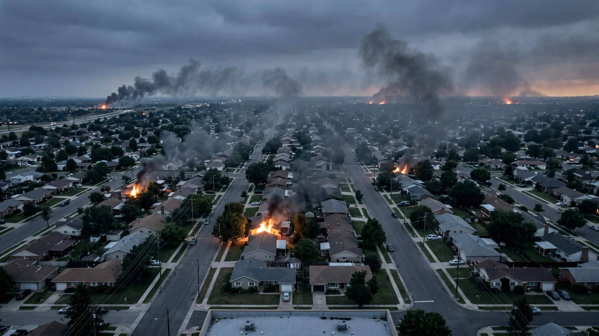
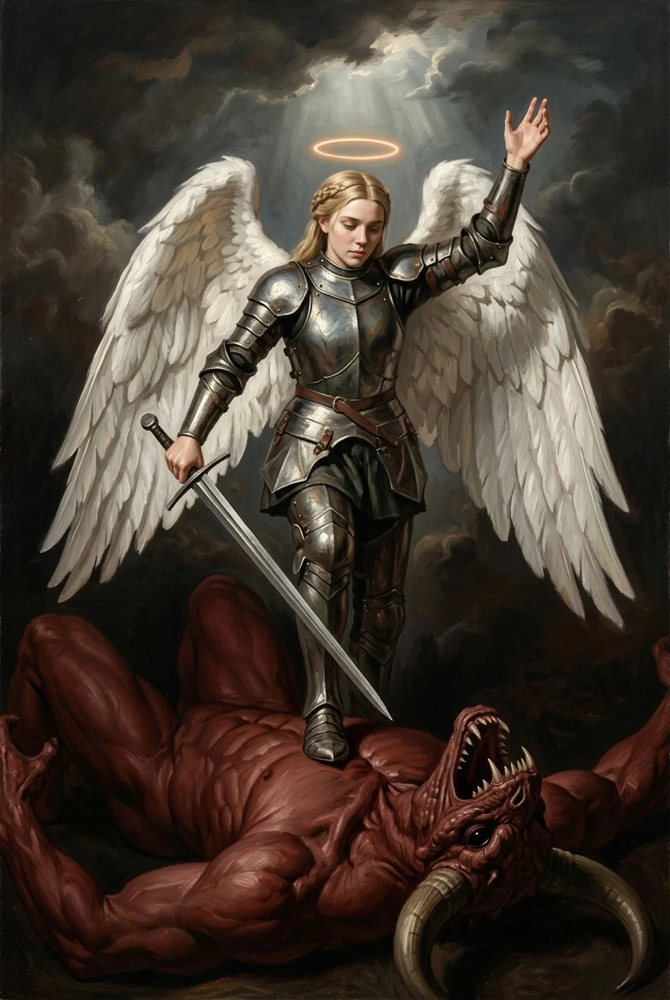
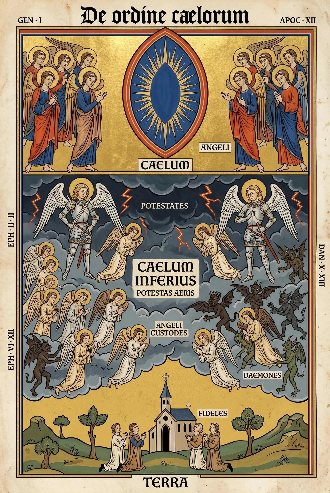

What WRATH is
WRATH is a grimdark Catholic universe set in a collapsing contemporary America. Angels have returned to a world that stopped expecting them, and they have returned as soldiers.
The protagonists are the Powers — Potestates, the warrior order of the Second Sphere, the choir whose scriptural office is to restrain the assaults of demons. They are armoured in plate, haloed, white-winged, and armed with whatever the era supplies. They can be wounded. They can be killed. Within the span of the story they stay dead.
Against them: a cult of ordinary people who chose, a bestial demon ecosystem in three tiers, and a named antagonist class of fallen Powers — the same order, the same rank, the same intimate knowledge of Heaven, inverted.
The thesis
The work runs on a specific argument, and a collaborator should have it before anything else.
Grey morality is the dominant register of contemporary fiction, and the project treats that dominance as evasion rather than sophistication. In a culture saturated with the morally ambiguous, committed moral clarity is the transgressive move. The Old Testament register is available precisely because it has been avoided rather than exhausted — nobody is currently using it seriously.
The crucial qualification, and the one most likely to be misread:
Old Testament wrath is proportion, not cruelty — and it arrives with its scriptural conditions intact. The Powers do not burn a town until they are certain no righteous remain within it. The Genesis 18 bargaining is structural canon, not decoration: forsitan fideles supersunt, perhaps faithful remain.
That condition is what makes the judgment serious rather than sadistic. A writer who removes it has removed the thesis.
The shape of the world
Hell is geometrically closer to Earth than Heaven. Prayers go up fast; answers come down slow; angels have to transit contested air to arrive at all. It is grounded in Daniel 10 and Ephesians 6:12 — the prince of the power of the air — and the IP states it internally as “Hell is in the air. Heaven is past it.”
That single rule organises almost everything else: why help is late, why so few angels are ever seen on the ground, why the US military has no unaided air superiority, and why an angel arriving at all is an event.

Civil authority has collapsed. Martial law is in effect. Emergency broadcasts tell civilians to shelter in place or withdraw to the nearest church — and the government cannot say why, because naming the hazard is not something the Emergency Alert System has language for.
The angels were gone for roughly seventeen centuries before this. The current Powers personally remember antiquity; they were there. What surprises them is never evil — evil is a finite menu and they have read it — but the age itself, and the fact that the veil has torn.
Three things that are always true
- God is never depicted. Not the Father, not the Trinity, not Christ, not named saints. Conveyed through effect and consequence only. Refusing the depiction is what keeps the divine infinite.
- Christianity is treated with weight, never mockery. The transgression lives on the action side; the metaphysics are handled with reverence. This is the line that separates the IP from every other angels-on-Earth property working in post-Christian irony.
- Nobody explains anything. No narrator, no text crawl, no character telling another character what they both already know. The world is assembled by the audience out of behaviour, broadcasts, signage and the writing on weapons.
The form
Pieces are vignettes — mostly thirty to ninety seconds, one idea each, ending on a held image. Each carries a two-clause title: the Latin name of its defining Power, a classical interpunct, and the English.
Iustitia · Justice · Caritas · Sacrificial Love · Vindicta · Vengeance · Zelus · Holy Zeal
The English half is not a translation. It is a valence-corrector — the word that stops a modern audience hearing Vindicta as dark personal revenge and hears divine requital instead. Choosing it is a real design step, and it is covered under language.
How to use this companion
This site is derived. Canon.md and its specialist documents are the authority; everything here
is curated out of them for a reader rather than a production. Where this and canon disagree, canon
is right and this page is stale.
It is also out-of-universe. It is not written in the voice of the world — it explains the world. If you have seen the codex, that is a different artefact doing a different job.
Start with the thesis you just read, then the world, then the Powers. Language can wait until you need to write a line.
The first principle
Every rule in this IP derives from one sentence.
Fidelity to the world as depicted.
Use it when the specific rules do not cover a question, or when a proposed element feels wrong and you cannot name which rule it breaks. It is the how that sits alongside the thesis’s why.
It is also self-referential, and deliberately so: the IP’s first virtue is Fides — faith, fidelity — and the craft principle is fidelity. The method is what the world itself calls right.
What it refuses
The fastest way to get calibrated. These are the hard nevers.
- No narrators. No voiceover, no text crawl, no explanation from outside the frame.
- No one-liners over sacred violence. A Power killing in silence reads as judgment under authority not her own. A quip reads as a different franchise.
- No modern idiom under gravity. Nobody speaks like a contemporary screenwriter at the moment that matters.
- No pentagrams. The cult’s actual vocabulary is NON SERVIAM graffiti and the Leviathan Cross — because they sit inside the scriptural-historical tradition of rebellion, not inside late-twentieth- century horror’s occult shorthand. An Old Testament idolatry register is available; the Hollywood occult register is not.
- No invented Latin. Real scripture, real liturgy, real classical sourcing. Coining Latin that sounds like real Latin is the specific failure this principle exists to prevent.
- No cartoon enemies. The cultists are people who chose.
- No God on screen.
- No ironic distancing. Nothing that winks.
- No audience-reassuring moments. No beat whose job is to make the viewer comfortable with what they just watched.
What it commits to
The positive half, and every item is a research obligation rather than a style note.
- Real scripture — actual verses, in the actual Vulgate, cited correctly.
- Real Latin — grammatical, attested, and sourced from the tradition rather than assembled.
- Real theology — Augustine and Aquinas are load-bearing, not decoration.
- Real bureaucratic convention — a federal emergency bulletin that a drafter would recognise, down to the constitutional problem in its third line.
- Real period illumination — a thirteenth-century manuscript plate constructed by that period’s own rules.
- Real human speech — soldiers who sound like soldiers.
Why the two lists are the same list
The refusals are not squeamishness and the commitments are not research for its own sake. Both fall out of the axiom.
An invented Latin phrase fails because it would not be in that world. A pentagram fails because this cult would not use one. A narrator fails because there is nobody there to narrate. And the emergency broadcast has to be accurate to real federal drafting practice because that is what would actually be on the screen, and its accuracy is what makes the horror land.
Every refusal shapes the positive space by constraining it. The negative space is the design.
When to reach for it
When a scene feels wrong and no specific rule says why. Reconstruct the question as would this be in this world, at the weight it would actually carry? — and the answer usually arrives immediately.
It is also the final filter after every other one has run. If a gesture passes legibility, valence, register and theology and still fails fidelity, it fails.
The remainder
This page is not canon and not a checklist. It is an articulation of the quality the work is trying to have, and the source document says plainly that naming the quality is the value while operationalising it is unsolved and maybe unsolvable. Read it to know what to protect, not to know what to do.
A token closes; a real thing leaves a remainder
The central idea is a distinction.
A token is exhausted by its effect. You consume it, it does its job, and nothing is left over. A real thing leaves a remainder — something consumption does not use up, that stays with you and keeps being there after the effect has finished.
The difference between this work and the thing it is trying not to be is not the surface. Same angel, same killing, same grade. The difference is that slop hedges — the quip, the validation, the cartoon villain, the heroic framing — and the work removes the hedge.
Three places the remainder comes from
Meaning it — the moral axis. The work does not hold its own premises at arm’s length. There is no moment where it signals that it knows better than what it is showing.
Coherence below the waterline — the world axis. Far more of the world is worked out than is ever shown. The audience never sees the ward chronology, the drafting chain behind an emergency bulletin, or the jurisprudence governing which office may execute whom. They feel that those things exist, which is a different experience from being told them.
Maximal thought, minimal display — the authorial axis. Spend the thinking; show almost none of it. The form cannot show its working, so the working has to be load-bearing without being visible.
The three refusals are one gesture
This is the argument that makes the page worth reading, and it is the reason a single rule elsewhere on this site exists at all.
- Refusing to justify — the Power does not explain herself. (Moral.)
- Refusing to explain — the work does not tell you how to feel. (Craft.)
- Refusing to translate — the angels speak Latin, unglossed, to each other. (Linguistic.)
These are the same gesture in three registers.
Which means the Latin is not an authenticity preference and never was. It is the linguistic form of the refusal to hedge. A world that translated itself for you would be a world that was managing your comfort — and the moment it starts doing that, it starts hedging everywhere else too.
Meaning it all the way down
The deepest version of the claim: it is not enough for the surface to be serious. The thing has to be serious at every layer you could dig to, including the ones nobody will dig to.
That is why the scripture is real and cited correctly even where no viewer checks. Why the emergency broadcast has a constitutional problem in it. Why a psalm’s verse order is the choreography of a fight. None of that is visible. All of it is load-bearing, because a work that is only serious where it is observed is performing seriousness rather than having it.
What this means for a collaborator
The source document states the collaboration model directly, and it is worth knowing before you start.
The gut generates the beat. The theology audits it. The arrow points one way. A beat arrives whole, and the reasoning comes afterward to check whether it holds — not before, to produce it.
So the job of someone helping is not to find the beats. It is:
to go find the bedrock already under his feet, so he can name what he’s standing on when asked.
Which is a genuinely useful thing to be able to do, and it is most of what this whole site is for.
How to use this companion
It is derived
The working canon and its specialist documents are the authority. Everything here is curated out of them for a reader rather than for a production.
Where this site and canon disagree, canon is right and this page is stale.
That is not modesty. It is the operating rule, and it is the same rule the in-universe codex runs on. If something here matters enough to build on, it is worth confirming against the source.
It is out-of-universe
This site explains the world. It is not written in the voice of the world.
There is a separate artefact that is — an in-universe codex, written as a document produced inside the fiction, for an audience inside it. That is a different thing doing a different job, and the two should never be confused. This one wears the IP’s typography because that is brand, not voice.
Three tiers of certainty
The source canon sorts everything into three states, and this site carries that distinction because losing it would turn speculation into fact.
Locked — decided, committed, use as-is. Unless a page says otherwise, what you read here is locked.
Candidate — leaning that way, but it can still flip. Always marked.
Open — undecided, and not canon yet. Collected in What isn’t settled, which is where a new writer can most usefully contribute.
There is a fourth marker worth knowing about. Some character material is creator-stated but never depicted — true, highest authority available, and not evidence. Where it appears here, it says so.
What is excluded, deliberately
Two things you will not find, and it is worth knowing they were decided rather than forgotten.
How any of it gets made. No production, no pipeline, no tooling, no technique. This site carries the fiction — the world, the characters, the language, the published work, and the reasoning behind them. A writer coming to help with story does not need the pipeline.
A spoiler gate. Unshot and in-development material is here, unflagged, on purpose. Scenes that arrived whole is full of things that have never been filmed and some of which never will be.
Where to start
If you are new to the world: What WRATH is → The first principle → Cosmology → The choirs of Heaven → The Powers. That is about twenty minutes and it is enough to follow any published piece.
If you are about to write something: How a vignette gets built and Writing a Power, then Vulgate and Common Tongue for whichever register your scene needs. Then What isn’t settled, so you know which ground is load-bearing and which is still open.
If you want to see the work first: The works. Four vignettes, about ten minutes total, and almost every rule on this site was locked by something one of them did.
One habit worth adopting
The single most repeated instruction across the source documents, in various forms:
Evidence before conclusion. Observations are facts; readings are provisional.
The canon keeps its own errors visible — struck rather than deleted, corrections annotated in place — because the record of having been wrong once is more useful than a clean page. Several passages on this site exist because someone reasoned confidently from an office to a character, and the footage said otherwise.
Read accordingly, and where a page says something is open, leave it open.
The works
Everything below is published. Nothing plays until you click it — no video request is made to anyone until then.
If you are new, start with the four vignettes. They are the canonical foundation: each one renders a single Power’s vocation as a single concrete act, and almost every rule elsewhere on this site was locked by something one of them did.
Where to start
Iustitia established the dispatch register, the subtitle convention and Deus Vult as a citation rather than a reason. Caritas established that a Power can die, and that the world does not stop when one does. Vindicta established the two-beat self-introduction and the unmasked cultist’s ordinary face. Zelus is the deliberate long-form outlier and the only piece so far carrying Power-side combat callouts.
The trailers
Everything else, newest first
A note on scale
Most pieces run under a minute. That is the native form, not a limitation — one idea per piece, compressed, ending on a held image. Zelus at 4:49 is the deliberate exception and is described in canon as an outlier rather than a direction.
Two further published pieces do not appear above. Tribue Illis · Give Thou Unto Them — a wordless choral Vindicta short — went to X only and has no YouTube entry. And a small number of older trailer cuts have been deliberately retired; where a piece is not in this list, it is not part of the current corpus.
What is available beyond the video
Every piece with speech or lyrics ships caption tracks in English, Russian and Japanese — fifty-six files across eighteen pieces. They are not a convenience layer. The Russian tracks carry the Powers’ Latin combat callouts rendered through Synodal liturgical register, and the Japanese tracks render them in bungo, classical literary Japanese, with the names in ecclesiastical katakana.
For several pieces the shipped caption file, not any document, is the source of truth for what was actually said.
What each piece established
Everything published is canon. The only variable is depth. Most pieces execute rules that were already locked; a few earned a fuller record because they added something.
This page is the second kind. It is also, read in order, the most efficient account of how the world actually got built.
The foundation
Iustitia · Justice (2026-05-12) — the first vignette. Established the title convention [Latin] · [English], the Vulgate subtitle convention, and Iustitia as operational leader.
Caritas · Sacrificial Love (2026-05-18) — Powers can die. Also the withheld-death device, and the visual baseline for lesser demons. The world does not stop when one dies: cultists walk past her body as if the fight were routine.
Vindicta · Vengeance (2026-05-19) — Powers don’t holster. Bearing expresses virtue. The two-beat self-introduction. A verse split across multiple weapons. Powers do not negotiate with the condemned.
Zelus · Holy Zeal (2026-05-31) — forgiveness requires repentance. The affect spectrum, withheld-violence audio, the juxtaposition principle, the first greater-demon engagement, and the mouth weak-spot.
The middle run
Ex Alto · From on High — the first depiction of direct operational cooperation between the US military and Heaven’s forces. A Power inserted by conventional military transport rather than flight alone.
Non Timebo Mala · Fear No Evils — the first on-screen depiction of a Power afraid. She takes cover under fire and it is shown on her face, not narrated around.
Fiat Ignis · Let There Be Fire — Old Testament-scale destruction delivered through real modern military means rather than personal supernatural manifestation. The Power present is where the framing places responsibility, regardless of who triggers the mechanism.
Conculcabis · Thou Shalt Trample — the first depiction of Iustitia operating in the Constantinian era, c. 312.
Draco · Dragon — the first dragon. The in-world reason the US military never had air superiority: Hell held the air before Heaven arrived. The IP’s first pre-arrival piece, with no Powers on screen or in its vocabulary — and it puts Sacrilega on Earth before Heaven’s arrival, giving her seniority in theatre over every Power in the catalogue.
Mihi Vindicta · Vengeance Is Mine — the claims-between-offices doctrine. How two Powers resolve overlapping jurisdiction: a remittable office-claim yielded to an un-remittable blood-claim held in trust. Also the first depicted use of the narrow humour door — Powers dry with each other only.
The recent run
Vivis · You Live — Misericordia’s first on-screen appearance, and the New Testament thread depicted for the first time, in the register of grief that rises without breaking.
Pauciores Sumus · We Are Fewer — Misericordia’s first speech, and the first Power rage on screen. Also the first piece in which a Power’s office has no object: Vengeance cannot collect, and the collision does not resolve, because Vindicta cannot yield a claim she holds in trust and Mercy has already acted.
Pietas · Piety — the heaviest load any single piece has carried. A Power is depicted glad — the first time, and the first break of the flat register that is not a cost. A fallen Power can operate a consecrated weapon. Pietas’s inscription is SERVIAM, the affirmative of the cult’s NON SERVIAM. Sacrilega killed her, with her own weapon. And a Power dies afraid — the fear a response to being told not to be.
Malignitas et Atrocitas — the fallen tier’s founding depiction. Before it the corpus held one fallen Power; after it, three. It locked the class uniform by depiction — horns, no halo, black hair, blacked-out eyes, the Leviathan Cross on the breastplate, black feathered wings — plus pointed ears as a class constant, which had never been written down, and the fallen weapon rule: all-black conventional firearms, unmarked. Also the first fallen-to-fallen scene, and the reasoning that the fallen speak Vulgate because they came from Heaven and changing sides did not change the language overnight.
Ego Te Volo · I Want You — Malignitas’s first spoken line, after an entire debut of silence. Alone in a dead mall, speaking Vulgate to a black cat that runs from her.
Miserere · Have Mercy — the first on-screen killing of a fallen Power by a Power. Wordless: no callout, no line, no self-naming.
Haeretici · Heretics — the first pre-modern depiction of Zelus, and the Leviathan Cross present in the Middle Ages. Also a third move on the Be not afraid axis: a mortal pre-empts the salutation — “I do not fear you” — and the piece answers by killing him mid-sentence, which makes the defiance empty.
Iustitia Victrix · Justice Victorious — the paintings-as-testimony thesis gets an actual canvas as an object in the world. A 1640 Italian painting of her, hanging in a modern museum, catalogued to an unknown artist under an abstract allegorical title. The world looked at a Power, painted what it saw, and shelved it as a personification. The testimony survived; the knowledge of what it testifies to did not.

Look at what the painter got right and what he could not. The armour, the wings, the halo as a ring of light rather than a disc of metal, the demon’s animal head — all of it accurate. What he has no way to render is that she is a soldier on a job, so he gives her the raised hand and the shaft of heavenly light, and the picture becomes an allegory. That is exactly how the testimony got lost. He painted what he saw; the tradition catalogued what he painted.
Adventus · The Coming — the first depiction of a Guardian in the corpus. Male, dark-haired, bearded, cream tunic under rust cloth, no armour and no weapon, wordless. And the mass descent puts the tier’s defining rule on screen for the first time: most Guardians are killed in transit.
The ones that established nothing
Worth saying out loud, because it is a real category and not a failure.
Surge · Arise, Tribue Illis, Ophanim and Seraphim each execute locked canon and add nothing. Ophanim and Seraphim are the first motion realisations of designs previously fixed only in reference stills. Surge had three candidate items checked and every one was already locked elsewhere.
A piece that establishes nothing is not a lesser piece. Most of the catalogue executes canon rather than extending it, and the record is careful to distinguish depicting a locked rule from adding one — a distinction it has caught itself getting wrong more than once.
Cosmology
The universe is three registers stacked vertically, and the middle one is held by the enemy.
Heaven is above. Terra is below. Between them is the Caelum Inferius — the lower heaven, the potestas aeris, the power of the air — and it is contested ground. Prayers rise through it quickly. Answers come down slowly, because whatever is bringing them has to fight its way through.
Why this is the load-bearing rule
Almost every other constraint in the IP is downstream of it.
- Help is always late, and the lateness is structural rather than dramatic contrivance.
- Angels arrive rarely, because arriving costs. Angels die crossing. That is why so few are ever seen on the ground — and the work depicts the consequence without ever stating the cause.
- The US military has no unaided air superiority. Hell holds the air; the dragon tier operates in it. This is the in-world answer to the obvious question of why modern ordnance does not simply win.
- An angel standing in a suburban street is an event, not a premise.
It is scripturally grounded rather than invented: Daniel 10, where a messenger is delayed twenty-one days by a contesting power; Ephesians 6:12, wrestling not against flesh and blood; Ephesians 2:2, the prince of the power of the air.
The claim this makes against the tradition
The IP’s cosmology is unusual, and the unusualness is deliberate.
Western art put Hell underground. It is so consistent that it reads as doctrine, but it is not doctrine — it is Dante, and Dante won. The scriptural vocabulary for the demonic is overwhelmingly aerial, and the visual tradition simply never took it up.
So there is an empty slot in art history, and WRATH is claiming it. That is the reasoning behind the in-world cosmological diagram — a fictional thirteenth-century French Gothic manuscript plate showing the three zones as the tradition would have drawn them if it had followed its own texts.

The Latin, and one collision worth knowing
The zone names are constructed, not borrowed, and one of them had to be resolved against an existing term:
| Term | What it names |
|---|---|
| Caelum | Heaven proper. |
| Caelum Inferius | The lower heaven — the contested zone. Chosen over Potestas Aeris to avoid the collision below. |
| Terra | The earth. |
| Potestates | The choir. The Powers themselves — the order the protagonists belong to. |
Potestas Aeris — the power of the air — is the scriptural phrase for the zone. Potestates is the scriptural name of the choir. Using both would have put the Powers and the thing the Powers fight under one word. Caelum Inferius resolves it, and the phrase is still true to the texts.
The breach
The present war has a cause, and the audience is not told it.
Modern surface-pagans — the crystals-and-Etsy, spiritually-but-not-religiously kind, not any historical or organised tradition — performed a Lilith invocation decoratively, the way that demographic engages with sacred material. After centuries of decaying wards and declining genuine faith, the invocation was real. They believed they were engaging a reclaimed feminist archetype. What answered was the primordial night-demon the wards had been built to keep dormant.
This is submerged canon. It is true, it is consistent with everything else, and no published piece explains it. Within the present story the breach is simply something that already happened, referenced only as decades of decaying faith and a ritual that should have stayed in the ground.
It is available to be foregrounded later, most likely in a non-chronological piece. A writer should know it and should not have a character say it.
What canon deliberately does not answer
- How long the wards held. A figure has been floated and never ruled. Vaguer phrasings keep it open on purpose.
- Whether the angelic absence and the ward timeline are the same event. If they are, the hinge is Constantinian — the same fourth-century moment one published piece is set on. Unruled.
- Whether the Guardians remained on Earth throughout. Deferred by the creator in his own words: I don’t know yet. It matters, because if they stayed, an information asymmetry falls out as canon — the Guardians would know the moderns intimately while the Powers know them only by report.
These are not gaps to be closed helpfully. They are open because a piece has not yet needed them closed, and the piece that needs one gets to decide.
The Absence and the Return
Angels walked the earth before. Not for a long time — on the order of seventeen centuries. The last era of open visitation is antiquity; the present war is the first open return since.
The duration is deliberately approximate. Canon fixes no date, and it is silent on two things on purpose: whether the gap was absolute or rarely punctuated, and what ended it beyond what the breach already accounts for. Both are left open so a future piece can answer them without contradicting anything.
They were there
The Powers personally remember antiquity. The current individuals — these ones, not their predecessors — were present for it. Their shared past is first-hand.
That is what licenses the deep-time shorthand between them, and it is why the shorthand has a hard edge: shared references stop at antiquity. They can say “you said that at Nineveh.” There is no “you said that in 1943.”
The surprise doctrine
What can and cannot surprise a being this old. Getting this wrong is the fastest way to write an angel who reads as a tourist.
Evil cannot surprise them. Sin is a finite menu. It repeats. To beings this old, atrocity is boring — and played flat, that boredom is one of the coldest notes the register has. They never trade war stories about what the enemy did.
The age can, and in two stacked ways.
Temporally, their knowledge of humanity is intimate but seventeen centuries stale, so the surprise is anthropological and it lands differently per office:
- Iustitia returns to a civilisation of law — her own form imitated at planetary scale.
- Vindicta returns to the blood-feud dead: the victim written out of justice as a party, requital renounced as shameful.
- Pietas returns to unbelief as the default state.
- Fides returns to a people with neither faith nor sight.
- And roster-wide: a species that had forgotten death — and is now learning it again.
Metaphysically, everything they knew was collected under hiddenness: faith without sight, for the whole of human history. The veil is now torn. Every human choice is being made under conditions that have never existed before. Their model is broken, they know it is broken, and they compare field notes on an experiment nobody has run.
Wonder is orthodox
This matters, because it is easy to assume an angel must be either omniscient or troubled by not being.
Matthew 24:36 — not even the angels know the day or the hour. Plan-ignorance is canonical. They are ancient soldiers in a war above their clearance, and they are untroubled by it. 1 Peter 1:12 — things into which angels long to look. Curiosity about what God does through humans is orthodox, not a weakness.
So their surprise lives entirely in particularity. Never that a move is possible — they know every move. Only that this creature found it.
They may even say aloud that they do not know how it ends — the Quamdiu? / Nemo scit. / Neque nos. family — without it constituting doubt. Obedience never required knowledge.
Tone guard, locked: never puzzled-by-technology comedy. Then-and-now observations are dignified, office-level readings of what changed. An angel is never confused by a machine.
That guard exists because the comic version of this premise is the obvious one, and it would end the IP in a single scene.
The choirs of Heaven
The angelic structure is the ninefold Pseudo-Dionysian hierarchy, and all nine choirs exist.
But the useful thing is not the list. It is the rule the list produces:
Rarity equals rank. The higher the order, the less often it appears and the less directly the camera can hold it. Audiences learn the hierarchy without a single line of explanation, just by watching which angels show up and how their designs relate.
Five categories of depiction
Not one gradient — two different axes, deliberately held apart.
Never depicted. God the Father, the Trinity, Christ, named saints. Invoked, prayed to, named on medals, present through their instruments — never shown. This is theological respect, not squeamishness: refusing the depiction preserves the mystery and keeps the divine infinite.
Rendered through shadow, voice and consequence. The named Archangels — Michael, Gabriel, Raphael, Uriel. Michael’s dispatch of the Powers is the canonical example: his shadow falls over the kneeling Powers, his voice commands, and he is never shown.
Rendered through silhouette for scale. The Dominions. Not a refusal — their true scale simply exceeds what a frame can hold. A Dominion is depicted by the shadow it casts across a contested battlefield, and the regalia has to read at that scale: crown (delegated sovereignty — a regal tier, not a warrior one), sceptre (command over lower ranks), orb (the sphere of creation it administers), wings spread wide. When a Dominion’s shadow falls, cosmic-administrative authority has noticed the engagement below. Its appearance is the event; it does not fight at ground level.
Depicted fully, at rarity. The First Sphere — Thrones/Ophanim, Seraphim, Cherubim. Rendered directly and faithfully to scripture, but reserved for significant escalation. When one appears, the situation has exceeded what Powers can handle, and Powers defer.
Direct depiction. Powers, Guardians, common angels, humans, lower demons. The operational tier the audience follows.
The two axes: theological respect governs the first two — refusal out of reverence for persons. Cinematic restraint governs the next two — restraint out of scale or rarity. A Seraph being depicted is not a theological problem; scripture and iconography depict Seraphim. A saint being depicted is. Different rules, different reasons.
The First Sphere
Thrones / Ophanim. Concentric gold rings covered in eyes, with a central massive eye — Ezekiel 1:18 and 10:12. The rings are textured and almost serpentine rather than purely geometric; they have substance, and they rotate as Ezekiel describes.
They manifest through reflective and liminal surfaces — puddles, mirrors, standing water. This is First Sphere cosmological permeability: they traverse through seams rather than fighting their way through contested air the way Powers must. And higher-order beings are identifiable individuals, not tier specimens: the same Ophanim has been depicted looking back at a cultist through a puddle and then standing physically in the street.
Seraphim. A classical marble-statue face, serene, eyes closed — Seraphim contemplate the divine directly, so their gaze is inward to God rather than outward to creation. Six wings: one pair folded close to the face per Isaiah 6:2, two pairs spread for flight. Rendered at massive scale. When a Seraph appears, Powers kneel — the hierarchy signalled visually, no dialogue required.
The register difference is worth holding: Seraphim are stone-coded; Powers are flesh-coded. Cold and contemplative against warm and living. A different kind of being, not a bigger one.
(An authorial note kept on the record: Isaiah specifies three pairs — two covering the face, two the feet, two for flight. WRATH’s Seraphim use one plus two, preserving the six-wing signature while prioritising visual imposition. A conscious departure, logged as a choice so nobody later mistakes it for drift.)
Cherubim. Scripturally described, visually unlocked. When depicted they will be Ezekiel-faithful tetramorphs — four faces, human, lion, ox, eagle. Explicitly not putti. The Renaissance baby-angel conflation is not canonical here, and the design problem of making a tetramorph feel like this IP is parked rather than solved.
Guardian Angels — the Ninth Choir
The lowest order, the closest to humanity, and — until recently — the tier with the most canon and the least footage.
A Guardian is assigned to an individual human. The design is the inverse of a Power’s: no armour, no weapon. Cream tunic under rust cloth. Varied faces, unlike the Powers’ uniform. They are the talkative choir — the vocation closest to humanity, one person watched for decades, speaks the most.
The arrival register is rooted in the biblical hineni and the Latin Adsum: “Lo, I am come” / “Here am I.” The canonical response to being called by God. Final phrasing is not yet fixed, and the line is still unspent on screen.
The rule that defines the tier: most Guardians are killed in transit.
They have to cross contested air to reach the person who prayed, and most of them do not arrive. That is the canonical reason the audience so rarely sees one.
The ratio is roughly ten Guardians dispatched to one Power. The first Guardian ever depicted in the corpus falls out of the sky and dies holding a Power’s hand, wordless, with a mass descent of haloless bodies behind him. The scarcity finally has footage behind it.
One shared marker
The halo is a universal angelic sign, gold and visible, and its state reads the same across every tier. It goes out at death.
That is what lets a Guardian with no line, no visible wound and no cut die legibly on screen — and it is why the halo is load-bearing rather than decorative. Remove it and several things break at once.
The collapse
Civil authority has collapsed. Martial law is in effect. And the most useful single artefact for understanding how this world feels from the inside is a piece of federal bureaucracy.
The problem the drafters have
The hazard fits no category in the emergency-management playbook. It is not a tornado, not a hazmat incident, not a terrorist attack in any conventional sense. The hazard is demonic incursion, contested air, and civilians dying in ways conventional emergency medicine cannot address.
And the government does not officially know what is happening. There are classified reports, first-responder accounts, priests and chaplains briefing defence officials — but no official classification, because demons is not a noun that gets printed on a federal bulletin. The classification chain is paralysed between what is true and what is defensible to say.
So it falls back on the most generic category available: the Civil Emergency Message, whose language is vague enough to accommodate anything.
Five constraints, some of them contradictory
Church and state. The government cannot direct citizens toward religious institutions. The drafters solve it by listing churches as shelter locations rather than directing people to them. The government has identified houses of worship as usable shelter infrastructure is a defensible factual statement. The government is telling you to pray is not. The list-rather-than-direct construction is load-bearing, and every layer of legal review is looking for exactly it.
Credibility with a divided audience. Half the country does not attend church. The language is engineered so the devout read it theologically and the secular read it as large buildings with community infrastructure — both readings at once.
Information hygiene. It cannot name the threat, so it describes symptoms and behaviours without naming causes. Unidentified persons or animals is as close as it can get.
Compliance friction. Too strange reads as a hoax; too vague reads as routine. The solution is to sound extremely bureaucratic — the boringness is what makes it feel real. Panic in the drafter’s hand produces dismissal in the viewer’s head.
Speed. It took about four hours to clear legal, public affairs and departmental review. Fast by federal standards, catastrophically slow by collapse standards. By the time it goes out, thousands are already dead because no authority told them anything.
The screen
Solid saturated red, bold white capitals, no branding. Thirty-five words, built for three-second comprehension.
``` CIVIL EMERGENCY MESSAGE
SEEK SHELTER IMMEDIATELY
Remain indoors. Do not approach windows. Shelter locations: houses of worship, designated municipal shelters. Avoid contact with unidentified persons or animals.
THIS IS NOT A TEST
ISSUED BY THE FEDERAL EMERGENCY MANAGEMENT AGENCY ```
Read it again knowing what is outside.
Do not approach windows suggests an airborne dimension — consistent with blast, weather or chemical cloud, all plausible conventional readings. Houses of worship comes first in the list, which is not neutral, and the municipal shelters provide the secular cover. Unidentified persons or animals is the closest available warning about demonic entities: the animal register covers the quadrupedal lesser demons, the persons register covers cultists and anything humanoid that might approach. The word unidentified implies some are safe and some are not — and the message provides no criteria for telling them apart.
And THIS IS NOT A TEST acquires weight nobody drafted. A faithful reader hears a statement about the nature of the crisis. A secular reader hears the standard disclaimer. Both readings function.
What is deliberately absent: no angels, no demons, no supernatural, no denominations, no prayer instruction, no time window (nobody knows when this ends), no geographic scope (it is nationwide), and no named hazard (the classification chain has not produced one).
The tells in the long bulletin
The full version runs about 450 words and is what news anchors read and emergency coordinators receive. Three lines in it are doing more than they appear to.
“Cathedrals and other religious institutions.” Administratively a cathedral is a church, and no normal bulletin separates them. Listing them separately means someone in the drafting chain knew that consecrated ground with longer continuous history carries additional weight against this specific threat, and could not say so.
“Rooftops.” No conventional hazard typology warns civilians off rooftops. The inclusion says the hazard has an aerial component — something that comes from above.
“Do not approach unknown individuals, including those apparently in distress.” The hardest line in the document. It tells civilians to ignore people who appear to need help, because entities can present as distressed humans to lure rescuers. It had to be included because cases had been reported. It had to be worded gently because a government cannot tell its citizens to become callous. The phrase apparently in distress is carrying all of that.
The word hazard appears throughout and is never once categorised. No chemical, no radiological, no biological, no meteorological. To an informed reader the absence is conspicuous.
Six people watching the same screen
The devout Catholic reads cathedrals and other religious institutions and understands immediately: consecrated ground, sacraments, priests. Goes to Mass. Brings family.
The secular skeptic parses infrastructure — big buildings, strong construction, likely staffed. Might go to a church if it is closer, but not for religious reasons.
The civilian who has already seen something reads avoid contact with unidentified persons or animals and understands exactly what the government cannot say. This viewer takes it more seriously than any other, because this viewer has already seen the thing the message is too bureaucratic to name.
The conspiracy-minded viewer concludes the government knows more than it is saying. This viewer is correct.
The foreign observer sees a domestic emergency of unclear scope and draws conclusions that are not accurate but not far wrong.
The child does not follow the words but understands the tone, and tells a parent.
How it degrades
The bulletin above is the government’s communication capacity at its highest functioning. Every guardrail intact, every review conducted, every constituency considered.
Then the guardrails fail, one at a time. First the constitutional delicacy goes — cathedrals and churches are strongly advised. Then the vocabulary starts leaking — affected individuals display physical transformation. Then information hygiene fails entirely — pray if you are able; priests have been dispatched where available.
And at the end:
``` CIVIL EMERGENCY MESSAGE
SEEK SHELTER IN CONSECRATED GROUND. PRAY.
THIS IS NOT A TEST ```
Nineteen words. Every bureaucratic protection has failed, and whoever is still running the broadcast is writing what they actually think.
The evolution from the first version to the last is a complete narrative on its own.
One rule for writing it
The emergency broadcast is never played for dark comedy or absurdist effect. The bureaucratic register is part of its gravity. Any piece that leans into the irony of “the government told us to go to church” breaks the IP’s stance on treating the sacred with weight. It is a serious instrument functioning as well as it can inside constraints that are about to overwhelm it. Play it that way.
The timeline and the eras
The Powers have been operating on Earth across history. What the modern story pins is not their first presence in the world — it is the arrival that opens the present war.
Landfall
Adventus · The Coming depicts first landfall, and it is the earliest point in the modern depicted timeline. Every other present-day piece is datable as after this.
The practical consequence is that “before landfall” is now a usable position, and the graffiti on the wall the piece opens under — GOD WHERE IS YOUR WRATH? — is canonically pre-landfall, painted during the weeks of waiting.
Scope it to the modern era. The pre-modern material is earlier and is not after landfall. Four published pieces sit explicitly outside the pin.
The depicted eras
| Era | Depicted in | What is carried |
|---|---|---|
| c. 312 — Constantinian | Conculcabis · Thou Shalt Trample | Iustitia with a Roman lancea — a spear, Chi-Rho carried on it |
| Medieval | Haeretici · Miserere | Zelus with a poleaxe in a Romanesque chapel; Vindicta with a longsword on a battlefield |
| c. 1640 | Iustitia Victrix | A sword, in a canvas painted by an unknown Italian hand |
| The apocalyptic present (~2012) | everything else | The Lancea Sancta rifle, the Deus Vult 1911 |
Implements track the era; the office does not change
This is the IP’s grammar for putting the same character in different centuries.
Same Power, same vocation, different tools. And the through-line is a name, not a shape: the modern rifle is the Lancea Sancta, the Holy Lance — and the Constantinian weapon is a holy lance. The modern name is inheritance rather than metaphor. It was always pointing backwards at that spear.
The rule now rests on three Powers across three eras rather than on a single asserted example.
The material-culture window
The present is carried entirely by what things are made of, never by a date.
The collapse happens in an America whose military material culture is the UCP era — roughly 2009–2015. Guard forces wear UCP digital camouflage and carry iron-sight M16A4s. The Powers’ modern implements may be anything in production inside that window.
The working present computes to about 2012 — seventeen centuries after the Constantinian engagement — but no date is ever depicted. No calendars. No dated documents. No year on screen. Even the emergency broadcast texts are deliberately date-free and are kept that way.
The prop test for anything new: did it exist by about 2012, and does it fit the shabby institutional register? If yes, it belongs. If no, it doesn’t — and the rule is enforced by material culture rather than by exposition.
The enemy
The antagonists are structured as a deliberate mirror of Heaven’s order, tier for tier.
| Heaven | Hell |
|---|---|
| (reserved: Archangels, Thrones) | Principes Inferorum — princes of Hell |
| Named Powers | Named fallen Powers |
| US military, National Guard, chaplains | Hooded cultists |
| Guardians, common angels | Daemones Minores — depicted · Daemones Maiores — escalation tier |
The cultists
Burlap hoods fully obscuring the face, black tactical kit, AK-pattern rifles, a Leviathan cross spray-painted on the plate carrier in blood-red. They read as primitive and improvised against the professional military look — post-collapse scavengers who gave up, not state actors.
The insignia is sprayed, not stitched and not issued, and that detail is doing the work: nobody gave them these symbols. They put them on themselves.
They are ordinary people who chose. Not monsters, not subhuman.
When a hood comes off — as it does when a wounded cultist pulls his mask away to breathe — the face underneath is deliberately ordinary. A normal young man, freckled, the face of anyone at any community college on any suburban street.
The IP refuses the easy moral solve of making the antagonists grotesque. Evil is what people choose, and the people remain people who chose. That is a more demanding moral architecture than the genre usually runs: the antagonists are not less human than the protagonists — they are humans who took the sigil and did the work it calls for.
So the faceless hooded register is operational — mass anonymity in the threat tier, the cultists self-marking away from individual identity into a faction. But whenever a face does emerge, through death or unmasking, it must stay recognisably human and never tilt toward monstrosity. The verdict the Powers render is on these specific human choices, not on a demonisation of human form.
And that is precisely why Powers do not operate on sympathy for the unmasked or the begging. Their humanity is not denied. It is what makes the judgment serious.
One further detail, and it is the kind of thing a piece lives or dies on: the crosses must be crude, self-applied, and different on every man, painted across the institution’s own markings. Stencilled, uniform marks would break the moral architecture, not just the texture.
The lesser demons — Daemones Minores
Quadrupedal, knee-height to a human. Elongated lean bodies, dark crimson wet-flesh skin, wide flat reptilian heads with wide-set curved horns, gaping mouths with irregular fang rows, thin whip tails with spade tips, a low ground-hugging crouch, broad clawed paws.
Pack-hunter coded. They come in numbers, flank, harass, overwhelm small units. Not boss monsters — shock troops. A Power cuts through them as crowd-clearing; a military unit fears them as a swarm threat in close quarters.
The greater demons — Daemones Maiores
Larger and meaner members of the same family. Bestial, not personal — upgraded creatures, not characters. They do not speak and do not have agency in the way the named tiers do.
Eight feet tall, bipedal, heavy muscular humanoid frame, draconic head with elongated jaw, a dorsal spine crest, three-clawed hands and feet, two large horns sweeping outward from the temples, dark red skin, and completely black eyes with no pupils — an eye treatment that marks the higher demonic tier.
The morphological shift between tiers is itself the escalation signal. The lesser demons are ground-hugging beasts. The greater demons are standing demons, iconographically resonant with classical devil imagery. Same lineage, different register.
The dragon tier — Draco / Dracones
The flying apex of the same bestial lineage: the demon family scaled up and given wings. Lean and long-bodied rather than heavy, with large leathery membranous wings, and the family markers at scale — crimson wet-flesh hide, swept-back horns, irregular fangs, spade-tipped tail, the black pupil-less eyes.
Its domain is the air, and that is the whole point. Hell contests and holds the contested air — Rev 12:7, proelium in caelo; Eph 2:2, principem potestatis aeris. This is the in-world reason the US military has no unaided air superiority, and it is the answer to the first question any grounded viewer asks about a war like this.
THE Dragon of Revelation — the draco who is Satan — is held above the class, undepicted. The Vulgate uses draco at both scales, for a creature class and for Satan himself, and the IP inherits that double usage as iceberg: a bestial class beneath an undepicted named archetype.
The three bestial tiers — Minores, Maiores, Dracones — are one lineage across three domains: ground swarm, ground heavy, air.
The princes — Principes Inferorum
Hell’s internal high command. Native to Hell, not fallen from Heaven. Ranking individuals with personality and agency, named from demonological tradition — Lucifer, Beelzebub, Asmodeus, Mammon, Belphegor, Leviathan. Reserved for rare, high-escalation use; the IP does not bring a prince on screen lightly.
The princes and the fallen Powers are not the same thing, and the distinction is load-bearing. A fallen Power was once Heaven’s and apostatised. A prince is native to Hell’s own hierarchy. A fallen Power’s horror is the horror of betrayal; a prince’s is the horror of what Hell makes natively. Different register, different scene-shape, different theological weight.
What the matchups are for
Each pairing produces a different kind of scene, and choosing one is a tonal decision rather than a tactical one.
- Power vs. named fallen Power — climactic duel, mirror-match.
- Power vs. cultists — slaughter, or judgment.
- Power vs. Daemones Minores — combat spectacle; demonstrates capability at mass scale.
- Power vs. Daemones Maiores — escalated combat, real risk register.
- Military vs. cultists — grounded tactical firefight between peers.
- Military vs. Daemones Minores — horror register, close-quarters chaos.
- Military vs. Daemones Maiores — desperate horror, near-impossible without angelic support.
- Military vs. a named fallen Power — a last stand, and probably a losing one.
The armory
Arma Consecrata — consecrated arms. The in-world term for weapons sacramentally set apart for use against the forces of Hell.
Consecration is the operative fact. What is visible is only its marker, and the marker takes one of two forms depending on the weapon’s geometry:
- Inscribed weapons bear a Vulgate phrase in gold blackletter on darkened worn metal — drawn from scripture or liturgy, virtue-matched to the wielder.
- Weapons whose canvas cannot carry blackletter — polymer receivers, standard-pattern rifles — bear the Chi-Rho monogram in gold inlay instead.
Both signal the same canonical fact. The inscription is meaningful, but it is the record of the setting-apart, not the substance of it.
One caution, because an earlier framing over-claimed and was walked back: the inscriptions are markers of consecration, not characters in the work. They are deliberately chosen, theologically fitted, and mostly silent — visible on the weapon rather than audible in delivery.
The named weapons
| Power | Inscription | English | Source | Weapon |
|---|---|---|---|---|
| Iustitia | Deus Vult | God wills it | the Crusader phrase, returned to its devotional register | 1911 slide |
| Zelus | Consumet Eos | It shall consume them | Deuteronomy 32 | shotgun receiver and FN FAL |
| Zelus | Ignis Consumens | Consuming fire | Hebrews 12:29 / Deuteronomy 4:24 | AT-4 tube |
| Vindicta | Reddam Vicem | I will repay | Romans 12:19 | Remington 700 stock |
| Vindicta | Mihi Vindicta | Vengeance is mine | Romans 12:19 | 1911 slide |
| Misericordia | Dona Requiem | Grant rest | the Requiem Mass | sidearm |
| Pietas | Serviam | I will serve | the affirmative of the cult’s NON SERVIAM | 1911 slide |
Two Powers carry dual signatures, and in both cases the pair does something a single inscription could not.
Vindicta’s two weapons split Romans 12:19 across both arms — Reddam Vicem on the rifle, Mihi Vindicta on the pistol. The verse is only whole when she is fully armed. Zelus’s pair names the two registers of her vocation: what she consumes at close range, and what consumes from above at scale.
Serviam is the sharpest of them. Pietas carries the affirmative of the cult’s own graffiti — and in the piece that kills her, Sacrilega takes it off the floor and shoots her with it.
One inscription now rides two weapons. Consumet Eos is carried on Zelus’s shotgun and on her FN FAL. The rifle is the newer arm and the inscription travelled with her rather than staying with the receiver it started on — which is worth noticing, because it makes explicit something the system only implied: the phrase belongs to the Power, not to the object. The consecration follows the vocation.
The standard arms
Alongside her named weapons, every Power carries two mass-pattern consecrated arms in field configuration:
- Lancea Sancta — “the Holy Lance.” The standard sanctified rifle, AR-15/M4 pattern, Chi-Rho in gold on the lower receiver. The era’s equivalent of the legionary’s pilum or the pikeman’s spear: the standard infantry arm of Heaven’s order.
- Gladius Sanctus — “the Holy Sword.” The standard sanctified sidearm.
Effectiveness, and one open question
Angel-wielded consecrated arms are peak. A standard conventional weapon works but is degraded. An earlier “blessed human” tier between the two is theoretical and not currently depicted.
⬜ What happens when a demon or a fallen Power wields an Arma Consecrata is OPEN.
The record once carried a clause saying the attempt fails or backfires. That was withdrawn in 2026 as something that entered the record without ever being decided. Note the direction: this is a withdrawal, not a ruling in the opposite direction. The question is now unanswered and available.
Since then, one half of it has been answered by depiction: a fallen Power can operate a consecrated weapon — Sacrilega picks up a dying Power’s own inscribed sidearm and uses it. That settles the fallen case only. The demon case remains open.
One retired name
Ira Dei — “Wrath of God” — is the inscription on the 1911 seen in the first trailer. It is preserved as canonically existing, but treated as a historical first-named artefact from early development rather than as any specific Power’s inscription. Virtue-matched inscriptions supersede it for the Powers they were designed for.
Tone and moral architecture
Tone is set by who is on screen
Rather than picking one testament-balance for the whole IP, the register is determined per scene by who is in it. Two gradients, running at right angles.
Vertical — hierarchy predicts tone. Higher choirs lean Old Testament; lower choirs lean New. Ophanim are fully OT. Archangels lean OT. Guardians lean NT — intimate, protective. The rule higher equals older testament encodes the tradition directly.
Horizontal — virtue determines register at the same tier. Iustitia arriving is OT. Zelus arriving is very OT. Vindicta arriving is OT. Misericordia arriving is NT. Audiences learn to read a piece’s register from which Power is cast into it. Virtue is a tonal promise.
And when two Powers appear together it is not a contradiction — it is the drama of two legitimate aspects of the same divine will in tension. Catholic theology explicitly teaches divine attributes as not in competition.
Restrained dialogue — function over silence
The discipline is restraint and function, not silence for its own sake. Characters speak when the scene requires it. What the IP refuses is dialogue that violates the frame.
The four refusals:
- No hero quips. A Power killing in silence reads as judgment under authority not her own. A Power delivering a one-liner reads as a different franchise.
- No in-universe exposition. Nobody explains the cosmology, the stakes or the history to the audience through speech. A Power does not tell another Power what they both already know.
- No emotional-release punctuation. Nothing said primarily to give the audience catharsis. No narrating feelings, no affirming shared humanity.
- No moralising. Nobody says what the IP is about. The theology lives in what is shown.
What is permitted, and often serves a scene well: operational dispatch and acknowledgment between deployed angels · registration of a condition in cold operational register (Hoc est quod timuimus) · vocation-statements in compressed register (Longa nox; Imperata facio) · the angelic greeting to a human in fear · categorical naming at the moment of judgment (Haeretici. Et illa.) · covenantal Latin when the scene has earned it.
Craft selection is not exposition. Choosing to vocalise a highly recognisable phrase like Deus Vult early, so audiences clock the linguistic register, and moving to less familiar Latin once it is established, is selection of which true-in-universe lines to make audible. Characters say what they would say; the author chooses which moments to render. The frame is preserved; the craft operates above it.
The discipline in one line: say what’s necessary, say it well, say nothing more, and never speak through a character to the audience.
The taboo content is deliberate — and has to be earned
Heretic execution, city-burning, no quarter for corruption, Old Testament judgment vocabulary. No dodging. Modern-media discomfort with these is not treated as a constraint.
But it must be earned by craft:
Deus vult said casually reads like a Twitter meme. Deus vult said by a Power executing sentence under covenantal authority, after mercy is exhausted, reads like medieval theology recovering from obscurity.
Seriousness of execution is the reclamation move. The minimal-dialogue stance is its corollary — the line stays rare, which protects it from cheapening.
Triage and escalation — the condition that makes it righteous
This is the part most likely to be dropped by a writer who reads only the surface, and dropping it turns the IP into something else.
Powers do not deploy maximum force on arrival. They render measured judgment on what is categorically corrupt, hold back full-scale destruction while uncertainty remains, and escalate only when depth is confirmed.
- Iustitia renders judgment on the categorically guilty. Where the case is clear, the sentence is rendered rather than held back.
- Zelus purges what is past saving — measured ordnance first, small arms and single strikes on specific structures. Total destruction is held in reserve until warranted.
- Full-scale response is withheld while forsitan fideles supersunt — “perhaps faithful remain” — is still possible.
- Escalation happens only when the rot is confirmed total.
The Genesis 18 register — Abraham bargaining with God, if there be fifty righteous within the city, wilt thou also destroy? — is structural canon. The destruction is conditioned on the absence of the righteous, and the angels operate inside that condition.
This is the whole moral architecture in one sentence: the IP renders not just Old Testament judgment, but Old Testament judgment with its scriptural conditions intact — the bargaining, the inquiry, the unless the righteous remain.
Remove the condition and the same footage becomes cruelty.
And no narrator
Diegetic-only worldbuilding. Broadcasts, signage, spoken prayer, labels on objects, inscriptions on weapons. The audience assembles the world from behaviour and artefact, and there is no voice outside the frame to help them.
How a piece opens
Each Power has a Baroque oil altarpiece — Caravaggio plus a period-appropriate secondary artist — which is her icon. The introduction format is built around it, and it is one of the most constructed systems in the IP.
The shot
A chapel niche, candle-vigil at night. Wide establishing → slow push-in → the painting filling the frame edge to edge → transition to live action of the same figure in the same pose, now in a real environment.
The placard is visible during the wide beat — the audience reads it in two or three seconds — and drops out of frame during the push-in. Grimdark register throughout: deep night, crushed blacks, candle-only illumination, volumetric haze. No daylight. No warm-museum lighting.
The placard
A weathered limestone slab, chiselled Roman capitals in the Trajan style, deeply cut and darkened with age and candle-smoke. Two lines.
IVSTITIA · JUSTICE A POWER OF HEAVEN
The locked four:
IVSTITIA · JUSTICE / A POWER OF HEAVEN
ZELVS · HOLY ZEAL / A POWER OF HEAVEN
VINDICTA · RIGHTEOUS REQUITAL / A POWER OF HEAVEN
MISERICORDIA · MERCY / A POWER OF HEAVEN
The V-for-U classical convention applies to the Latin portion only. IVSTITIA, but JUSTICE — not JVSTICE. VINDICTA · RIGHTEOUS REQUITAL, not REQVITAL.
The English line is not a translation
This is the part worth understanding properly, because it is a real design step and it is doing more work than it looks like.
The English is a valence-corrector. Some Latin virtue-names code with the wrong valence in modern English — Vindicta reads as dark personal revenge, Zelus as zealotry, Severitas as cruelty, Caritas as almsgiving. The English half exists to preempt the worst modern misreading and install the classical one instead.
The adjectives are load-bearing:
- HOLY ZEAL rather than ZEAL — the difference between a righteous-fire Power and a fanatic.
- RIGHTEOUS REQUITAL rather than VENGEANCE — the difference between divine lex talionis and a grudge.
- SACRIFICIAL LOVE rather than LOVE — the word sacrificial flips it from almsgiving to war-love.
It runs as a two-phase filter: legibility at roster selection — does the name clock cold? — and valence correction at placard design.
A placard can correct a name’s valence. It cannot make a dead word carry durable weight. That is why legibility is solved at the roster level and not here.
The paintings themselves
Each Power’s altarpiece pairs the Caravaggio anchor with a period-appropriate second artist chosen for what that painter’s tradition already knows how to say:
| Power | Secondary pairing |
|---|---|
| Iustitia | Guido Reni |
| Zelus | Reni’s Saint Michael |
| Vindicta | Artemisia Gentileschi — the Judith-over-Holofernes template |
| Misericordia | Piero della Francesca’s Madonna della Misericordia — wings wrapped forward as shelter, an inverted Pietà |
Two further rules hold across the set. Four distinct silhouettes, so one glance identifies the Power. And a halo rule: a clean disc for the justice-axis three, who read as sister-virtues, and a flame-textured halo for Zelus as the deliberate standout. The grouping is the roster sorted by virtue-axis, done visually.
The cult’s version
Fallen Powers are introduced through a structurally inverted version. The shot grammar is identical. Everything else is flipped.
| The chapel | The cult altar |
|---|---|
| Baroque oil altarpiece | A desecrated painting, stolen from a ruined church, her face painted over the original figure |
| Plain dark wood frame | No frame, or one improvised from salvage |
| Carved limestone, Trajan capitals | A crude plaque — wood, bone or sheet metal, scratched or branded |
| V-for-U on the Latin only | Crude letterforms; no classical convention respected |
| Warm beeswax candle-vigil | Cold red candles and oil lamps, blood-spattered surroundings |
| Rosary, dried flowers | Sacrificial implements, bone, desecrated relics |
| Warm volumetric haze | Thin cold smoke, greasy from oil lamps |
The inversion is load-bearing. The cult mocks Heaven’s visual language rather than inventing its own — it defaces rather than originates, which is the theologically correct register for a cult of fallen angels in a post-faith world: parasitic, desecratory, building nothing new.
Two typographic registers
A correction worth stating plainly, because the older record had it backwards.
- Roman inscriptional capitals — title cards, the WRATH brand card, in-world carved placards and signage. The register of inscription: things cut into stone or set as a title. Warm bone-white, wide-tracked, on black.
- Gothic blackletter, gold — weapon inscriptions only. The register of the consecrated object: a phrase set apart on a marked weapon.
The two are not “IP voice versus world voice.” They are titling versus consecration — and a carved placard and a title card sit in the same register as each other.
The title convention
Every piece carries a two-clause title: the Latin name of its defining Power, the classical interpunct, then the English.
Iustitia · Justice · Caritas · Sacrificial Love · Zelus · Holy Zeal
The interpunct is the classical Latin word-divider — continuous with the Vulgate register and the inscriptional typography. Not a colon (standard film-title convention), not a pipe (digital UI), not an em-dash (literary prose). It says this title is operating in the lineage of inscription, not of cinema marketing.
And where the title sits is chosen per piece. Declarative virtues name first and perform second. Hidden or retrospective virtues are witnessed first and named at the end. The placement is the vocation’s theology rendered structurally.
What a Power is
A Power is not a personality with a job. She is an office — a named quality of God given a body, a rank and a weapon — and the angel currently filling that office is replaceable.
That distinction is the single most useful thing a writer can hold onto here, because it explains both what the Powers reliably do and why reasoning from the office alone produces flat, generic characters.
The order
Potestates, the warrior choir of the Second Sphere. Uniformly female, blonde, blue-eyed, plate armour, gold halo, white wings. The uniformity is deliberate and it is an argument: angels are an order, and orders look alike within rank. Variance happens further down — Guardians have varied faces, humans and demons are fully varied. The Powers’ sameness is the signature.
They are finite. They can be wounded, they can be killed, and within the span of the story no Power who dies is replaced. Theologically a dead Power could be succeeded — the virtue is a quality of God and cannot go offline — but not inside the timescale the work covers. Every Power killed is one fewer Heaven has for the rest of what you will see.
The starting roster
Four active, three Old Testament to one New. The ratio is the point.
| Power | Register | Her work |
|---|---|---|
| Iustitia · Justice | OT — covenantal sentence | Judgment rendered on specific guilty targets. Leads multi-Power deployments. |
| Zelus · Holy Zeal | OT — fire | Mass-scale purging of what is past saving. Correctly-ordered fire, not recklessness. |
| Vindicta · Righteous Requital | OT — lex talionis | Precise mirror-return to specific wrongdoers. Measured, never furious. |
| Misericordia · Mercy | NT — rescue | Extraction, the cradling of the dying, intercession regardless of desert. |
Three OT Powers, three genuinely distinct OT modes — legislative sentence, purging fire, specific requital. One NT counterweight, alone on her side of the testament line, and that loneliness is structural. When Misericordia arrives her register contrasts maximally with whatever preceded her. She is the reason the judgment reads as severity rather than cruelty.
Others exist and are held for the stories that need them — Fortitudo, Caritas, Fides, Pietas, Spes, Clementia, Severitas, and a deep reserve beyond those.
Operational discipline
Locked by performance across the published work. These apply to every Power unless a piece deliberately deviates with a reason.
- They do not holster. Weapons stay in hand or on the sling. Holstering says the work is done, and the work is never done.
- They do not wear helmets. The face is the verdict-bearer and must be visible. Human soldiers in the same frame do wear helmets — the two rules apply to two classes of being and are deliberately asymmetric.
- They do not negotiate with the condemned. A verdict is an act, not a conversation. Powers speak to the saved, not the damned.
- They do not operate on sympathy — not even when the condemned begs, unmasks, or is plainly defenceless. The audience may feel it. The Power does not. The theology lives in that gap.
- Their bearing toward humans expresses their vocation. Caritas kneels; love crosses the distance. Vindicta stands above; the verdict comes downward. Iustitia stands level; judgment as equal-station pronouncement.
- They move tactically. No Power is ever staged shrugging off gunfire. What distinguishes them is a superior capability envelope — speed, precision, durability, positioning — not damage immunity.
- Their implements track the era. Same office, same vocation, different tools across the centuries they have operated in. A spear in 312, a sword in 1640, a rifle now.
Affect, and its limits
Powers vary in how much warmth their office carries toward humans — from kenotic-accessible at one end to vocation-consumed at the other. Caritas kneels into reach. Iustitia is procedural. Vindicta is minimal, silent at judgment and speaking only at consolation. Zelus is consumed by hers.
The placement derives from the vocation, not from personality, which is why it holds across pieces instead of drifting with performance.
But affect is one dimension, not the model. It describes how a Power behaves in office. It does not describe what she is like, and reasoning about character from this alone produces vocation-logic — generic by construction.
What the footage has actually shown
Canon keeps a separate running ledger of observed character: the residue, the things an office does not already explain. Iustitia executing a heretic is fully predicted by her vocation and gets no entry. Iustitia declining to accept credit is not, and does.
Three rules govern it, and they are worth adopting when you write:
- Observations are facts and permanent. Readings are provisional and attributed.
- Evidence before conclusion, always.
- Empty is an entry. A Power with appearances but no residue is characterised by that absence — she keeps doing exactly her office, which is a finding about her, not a gap for someone to fill in helpfully.
That third rule is the one most likely to be broken by a well-meaning collaborator, and breaking it is how a character gets invented instead of discovered.
The roster
What follows is evidence, not doctrine.
Canon keeps a running ledger of observed character — the residue a Power’s office does not already explain. Iustitia executing a heretic is fully predicted by her vocation and gets no entry. Iustitia declining to accept credit is not, and does.
Observations are facts and permanent. Readings are provisional, dated and attributed, and several below have been superseded in place rather than deleted, because the record of the office-lens misleading someone once is itself information.
Iustitia · Justice
Office: the ordering of things; the rendering of what is due. Register: Old Testament, courtroom of Heaven. Affect: procedural — judgment as equal-station pronouncement. Six pieces, more than anyone.
She leads. When Powers deploy together she commands in Vulgate and they acknowledge — Imperata facio, as commanded so done. It is operational coordination, not rank; every Power is the same tier. Hers is simply the most authority-coded vocation on the roster.
Her implements track three eras: a Roman lancea in 312, a sword in the 1640 canvas, the Lancea Sancta rifle and the Deus Vult 1911 now. The through-line is a name, not a shape — the rifle is the Holy Lance, and the modern name is inheritance rather than metaphor.
- Answers “Why?” with Deus Vult. A citation, not a reason.
- Named over a room of executed civilians in the cult’s mock court, she concedes the true half and refuses the rest across a paced silence: Forma mea. — my form. Non mos meus. — not my practice.
- Doesn’t answer Fides’s Omnes? — she gives the order instead.
- Yields by a single nod, not by speech.
- Does the insertion herself, off the ramp.
- Wounded, still holding the pistol, stops in front of a 1640 painting of herself — and does nothing with it.
Reading (session, provisional): unbothered rather than cold. Doesn’t explain herself, doesn’t accept credit, doesn’t delegate the sharp end.
Vindicta · Righteous Requital
Office: lex talionis — as he has done, so shall be done unto him. Not rage; precise mirror-return. Affect: minimal — silent at judgment, speaking only at consolation. Three pieces.
Her verse is split across her two weapons: Reddam Vicem on the rifle stock, Mihi Vindicta on the pistol slide — Romans 12:19 rendered as one declaration across both arms.
- Reads a soldier’s incomprehension and translates her own name for him.
- Walks past a living wounded man to finish the dead’s business, then walks back.
- Dry joke at her commander’s expense over a fresh corpse.
- Yells and strikes the Humvee hood at Requiem?! — the first Power rage in the corpus.
- Tells a colleague to leave, phrased as a professional objection so it need not be one.
- Hears an insult in a line that carried none, and looks away.
- Reaches for scriptural precedent when hurt — a citation with no act behind it, in an IP where citation is the preamble to the shot.
- Points at the dead around her instead of arguing. Testimony, not a claim.
- (creator-stated, not depicted) What she wants is for the men who killed Caritas to suffer as they die — crude and specific, not abstract justice.
Reading (session, provisional): rude to peers, careful with mortals — the inverse of her job description. Most personality on the roster.
Extending it: the asymmetry is the character, and the mechanism is that with mortals she has a job. Take the office away and what is left is the difficult one. Personality is the distance between the office and the person, and hers is the widest on the roster. When hurt she retreats into the office rather than out of it — which makes the professional register her armour, not her voice.
Zelus · Holy Zeal
Office: active fire; the destruction of what is past saving. Classically ira per zelum, the holy form of wrath. Affect: vocation-consumed. Four pieces.
Dual inscription: Consumet Eos — it shall consume them — and Ignis Consumens, consuming fire. The two named registers of her vocation: what she consumes at close range, and what consumes from above. Consumet Eos is carried on both her shotgun and her FN FAL — the inscription belongs to her rather than to a particular receiver.
She is correctly-ordered fire, not recklessness. A first appearance that does not stage that distinction makes her read as a fanatic, which is the single most common way to get her wrong.
- Doesn’t hear a sergeant’s status handoff; it plays under a muffle over her non-attention.
- Names the doctrine once, flat, then moves on — informs, does not persuade.
- Stands alone in the bomber’s bay; does not release the strike herself.
- Gives the condemned nothing at all — not even a citation. A knight on his knees accuses her of absence — “Where were you? When my father prayed—” — and she answers with the poleaxe. Iustitia at least answers Why? with Deus Vult.
Reading (session, provisional): absorbed, not angry. Doesn’t deliberate — so she doesn’t argue.
Misericordia · Mercy
Office: miseri-cor, a heart with the suffering. Rescue, the cradling of the dying, intercession regardless of desert — not amnesty for those who chose to inflict it. One piece, and the roster’s most-read character.
Her sidearm is inscribed Dona Requiem — grant rest.
- Arrives at Caritas’s body carrying the standard rifle, not her inscribed sidearm — the signature weapon withheld at the exact moment its meaning was most available.
- Walks up, sees her dead, and weeps. One tear, one sharp breath. The first depicted tear in the IP.
- Is told to leave, and does not go.
- Across twelve lines she neither disputes nor concedes anything. She turns an objection around, reports a fact, denies a false charge while restating the act, and agrees that a true statement is true. She never defends the killing, and never once tries to persuade.
Reading (creator): the word is mature — level-headed — and it is what makes the mercy operable. Not a companion trait: the precondition. To kneel to a dying man who has just murdered your colleague, take his hand and give him a good death, you must be unreactive to what he is. A temperament that takes things personally cannot perform that act at all.
It is also why she never defends the killing: mercy granted from equanimity has nothing to justify, where mercy from sentiment would be defensive. And the calm is what permits the warmth — she can touch a dying stranger precisely because she is not reacting to him.
(session) Her flatness is causal, not contrastive. She denies a charge and restates a fact in one unchanging register, and the restatement is what breaks the other Power. The character who never modulates is the reason the other one detonates.
Caritas · Sacrificial Love
Office: caritas in the classical sense — greater love hath no man. Dead, in the piece that bears her name. Two pieces.
- Kneels to the civilian, tells him his hour has not yet come, sends him on.
- Stops for a stray cat in a town where nothing else is alive — Vivis, you live; Ecce te, there you are. Delight rather than duty.
- Goes inside a dead stranger’s house and rummages the cupboards for its food.
- (creator-stated) Everyone got along with her — including Vindicta, who gets along with nobody.
Reading (session, provisional): she stops for things. The temperament kills her, not the office — the one who interrupts a war for a cat is the one who interrupts it for a stranger in a Walmart.
Extending it: she was the roster’s social centre, and she is dead. The first piece after her death is two Powers who cannot hold a conversation without one of them shouting. Nobody states it; it is simply what the piece is.
And why Vindicta grieves her specifically is derivable rather than sentimental. Run the jurisdictions. Iustitia’s office overlaps Vindicta’s. Misericordia’s overlaps. Zelus’s overlaps at the edges. Caritas’s could never touch hers — sacrificial love operates on the beloved, requital on the guilty; zero shared docket, structurally, forever. She is the only relationship in Vindicta’s life that was not a jurisdiction.
Fides · Faith
Two pieces, and the reason the affect spectrum had to be corrected against footage.
- Takes cover under sustained fire, visibly afraid, and holds the position. The IP’s first depiction of a Power experiencing fear.
- Asks Omnes? — all of them? — of a superior. The question nobody else asks. Proceeds anyway.
Reading (session, provisional): says the quiet part and does it regardless. Visibly troubled, entirely reliable.
Worth holding against classical courage — rightly-ordered action despite fear, not its absence — rather than reading the fear as a weakness in her.
Pietas · Piety
Two pieces, and dead in the second.
- Exhausted against a shot-up car; stands; kneels before the Seraphim.
- Her one line in the corpus is about other people showing up — the churches are full now — and she smiles saying it. The roster’s first depicted gladness, and the first break that is positive rather than a cost.
- Is separated from her own sidearm and crawls for it, in an IP where Powers do not holster.
- Dies afraid — and the fear answers the “Be not afraid” spoken to her. Her breathing goes heavy after the line, not before it.
Reading (session, provisional): her only line is not about the office and not about herself. It is about attendance, and it is the one time the corpus shows a Power glad. Set against it, she dies separated from her weapon and afraid. Both are the same disposition — what she feels is visible when nothing official is watching, in either direction.
Fortitudo · Fortitude
Two pieces, both supporting.
- Accepts dispatch without comment.
- One combat word — Sto, I hold. Joins Zelus at the mural, looks, says nothing.
Reading (session, provisional): too thin to read. She doesn’t need telling twice and has no opinions on screen. Could still become almost anything.
That entry is not a gap. A Power with appearances and no residue is characterised by that absence — she keeps doing exactly her office, which is a finding about her, and inventing something to fill it is the one move this ledger exists to prevent.
Held in reserve
Named, designed, and waiting for a story that needs them. The gate is legibility — does the Latin name, heard cold with no context, prime a first-time viewer for roughly the right kind of scene?
| Tier | Powers | Why they wait |
|---|---|---|
| Ready | Fortitudo, Clementia | Legibility high, valence correct, no placard correction needed |
| Placard-deployable | Caritas, Severitas | The English line must carry a load-bearing adjective — sacrificial, unbending |
| Hold | Fides, Spes | Low legibility; the word is dead or abstract in modern English and a placard cannot fix it |
| Deep reserve | Patientia, Humilitas, Sapientia, Prudentia, Vigilantia, Constantia, Temperantia | Pulled only when a specific story requires |
The filter is applied at the roster level, not the placard level. A placard can correct a name’s valence; it cannot make a dead word carry durable weight across a dozen pieces.
The fallen
A fallen Power is not a demon. She is a Power who changed sides.
Structurally she mirrors the walking Powers exactly: same Second-Sphere rank, same warrior class, same armour construction, same scale. What differs is function — she now opposes Heaven — and allegiance: she commands the cult and the lesser demons and answers to whatever hierarchy Hell maintains.
Augustine and Aquinas both teach that a fall corrupts but does not erase. So she keeps her warrior capacity, her command authority, and her intimate knowledge of the heavenly order, now turned against it. That is the source of the specific horror she carries in this IP: she is what a walking Power could become. The antagonists are mirrors of the protagonists, not monsters opposite them.
The inversion grammar
Fallen Powers are named for the inversion of the virtue they once embodied.
Pietas is dutifulness toward what is sacred. Inverted, it is Sacrilega — one who profanes it. The canonical example, and the shape every other name follows.
The naming is not administrative. Heaven removes her name — the de-titling act — and she names herself through what she chose. The corresponding vice becomes the title she is known by from that point on. She authors her own un-naming by what she says, or refuses to say, at the moment of the fall.
The Seven Deadly Sins are explicitly off the table as fallen names. The IP is titled Wrath, and a fallen Power called Ira would leave the audience unsure whether the work is about the sin or about the judgment. The inverted-virtue framework avoids it entirely — and it has no closed membership. There can be three fallen or thirty; nobody is counting.
Succession, and what it implies
When a Power falls, the office does not fall with her. The role persists and Heaven appoints a successor.
This has a consequence worth holding onto: the current Pietas is the successor to the one who fell as Sacrilega. Both have existed, at different points across cosmological time. The fallen roster is the named-and-removed class; the current bearers of those offices are separate angels doing the work faithfully.
The doctrine runs further than the depicted roster. Every active Power has a fallen counterpart, whether or not one has been named — which is why the reserve list exists, and why Spes, Prudentia and Temperantia have inversions waiting rather than absent.
The class uniform, in negative
This is the part most likely to be got wrong, because an earlier framing said the opposite.
The fallen are not a looser tier with per-being variation. They run the same design principle as the walking Powers — a class uniform, individuated in a small number of slots — which is precisely why they read as the order they broke from rather than as generic demons.
Every fallen Power carries all of the following:
- Red skin, dark and desaturated — never vibrant. It reads copper, and under cold light lands close to brown. Never a natural human tone. Not racial coding; demonic palette.
- Horns, where a halo or circlet would sit. No halo, ever — not broken, not dimmed. Absent.
- Pointed ears, pronounced and swept back.
- Black hair. A class constant exactly as blonde is for the Powers; only arrangement varies.
- Entirely blacked-out eyes, edge to edge, sclera included.
- Plate armour mirroring the Powers’ construction, carrying the blood-red Leviathan Cross on the breastplate — the same mark the cultists put on themselves, because they share her allegiance.
- Black feathered wings.
- All-black conventional firearms, unmarked. No Chi-Rho, no inscription, no cross on the weapon.
Individuation happens on two axes only: the body — hair arrangement and facial structure, and nothing else — and the loadout.
The weapons say the whole thing
Every fallen Power’s weapon is a Heckler & Koch. One manufacturer, seven models, no repeats.
The single maker is a class marker, and it inverts the Powers on the exact axis their own arms run on. Heaven’s are named, inscribed and sanctified — Lancea Sancta, Mihi Vindicta, Dona Requiem, Deus Vult. The fallen’s are unnamed production hardware from one catalogue. The same design language with the sanctity stripped out, precisely as the armour and the wings work.
The breastplate carries the mark, so the weapon does not need one. They wear the cult’s visual language, not Heaven’s.
How they are introduced
The Powers are introduced through a Baroque oil altarpiece in a chapel niche with a carved limestone placard. The fallen get a structurally inverted version of the same format — identical shot grammar, every other element flipped.
| Powers — the chapel | Fallen — the cult altar |
|---|---|
| Baroque oil altarpiece | A desecrated Christian painting, stolen from a ruined church, her face painted over the original figure |
| Plain dark wood frame | No frame, or one improvised from salvage |
| Carved limestone placard, Trajan Roman capitals | A crude plaque — wood, bone or sheet metal, scratched or branded |
| V-for-U on the Latin portion only | Crude letterforms; no classical convention respected |
| Warm amber beeswax candle-vigil | Cold red candles and oil lamps, blood-spattered surroundings |
| Rosary, dried flowers | Sacrificial implements, bone, desecrated relics |
This inversion is load-bearing for the IP. The cult mocks Heaven’s visual language rather than creating its own. They deface; they do not originate. For a cult of fallen angels in a post-faith world that is the theologically correct register: parasitic, desecratory, building nothing new.
The placards are cult-voiced
Heaven’s placards mournfully describe what a Power is — IVSTITIA · JUSTICE / A POWER OF HEAVEN.
A fallen Power’s placard is written by the cult that venerates her, and has to read like it. The English on line one should be a word the cult would inscribe proudly — DEFIANCE rather than SACRILEGE, because they claim her violations as their virtue.
Line two names both her past state and her elevation in cult cosmology. The cult’s core theological claim is that Heaven’s angels are servants and the fallen are the ones who stopped serving — so the arc is servitude to sovereignty, not simply fallen-from-Heaven.
SACRILEGA · DEFIANCE A POWER AT LAST HER OWN
Every word pulls weight. A POWER preserves the echo with Heaven’s placards — she shares rank with the protagonists. AT LAST is the long-awaited release the cult celebrates. HER OWN is the self-ownership claim: she answers to no one now.
It is grounded rather than invented. Real antinomian traditions — gnostic, Luciferian, Miltonic, LaVeyan — have always framed the fall as the first free act, Heaven as tyranny, and the fallen as self-owned.
The seven
Seven fallen Powers are designed. Three have appeared. Each inverts a specific office, and the pairing is the character.
| Fallen | Inverts | Weapon | On screen |
|---|---|---|---|
| Sacrilega | Pietas | H&K G36C | 3 pieces |
| Atrocitas | Iustitia | H&K G3 | 1 piece |
| Malignitas | Misericordia | H&K MP5K | 2 pieces |
| Impunitas | Vindicta | H&K HK21 | — |
| Indifferentia | Zelus | H&K MP7 | — |
| Infidelitas | Fides | H&K MP5SD2 | — |
| Inhumanitas | Caritas | H&K UMP45 | — |
Names not yet exercised on screen are held more loosely than those that have been. Publication locks a name — a shipped character cannot be renamed.
Sacrilega — fallen Pietas
Classical pietas is reverence owed to what is sacred: God, parents, country, scripture, holy places, the faithful departed. Sacrilega is that turned inside out — the fallen Power whose function is the desecration of the sacred.
Her signature act is not rage or chaos. It is calm, deliberate mockery of the holy. She hunts the faithful in their homes, kills them without urgency, and then desecrates their sacred objects for amusement — reading scripture upside down, inverting crosses.
She reads scripture fluently, possibly better than any living priest, because she was present for its writing. Her familiarity with Heaven’s texts is not scholarly; it is the casual contempt of someone reviewing old notes about a former employer. That makes her far more disturbing than a rage-coded demon, because she operates from intellectual certainty rather than emotional collapse.
Individuating features: long black hair. That is the whole of it — everything else is class.
What the footage has shown:
- Smokes over the body of her own replacement.
- Reads scripture upside down in a house showing signs of violence.
- Smirks in extended close-up watching a gunship fall out of the sky.
- Speaks for the first time — “Be not afraid,” in English, to a Power. The greeting canon reserves for frightened mortals: wrong speaker, wrong recipient, wrong register, at once.
- Takes the dying Power’s own inscribed sidearm off the floor and kills her with it.
- Her first depicted action of any kind. Four prior appearances were all idle. Here she walks unhurried, pins a hand under a boot, turns the body with a leg, and shoots — and the tempo never changes for the act.
- Smirks, then puts on sincerity for the line.
- (creator-stated) She is doing this for fun.
Reading: the only character in the IP who enjoys things. Amusement rather than rage — and it reads worse than fury would.
Extending it: the four idle appearances were never missing material. They were the tempo. She kills at the speed she smokes. And she is the only being in the IP who can counterfeit the sacred rather than deface it — the cult paints over what it steals, but she can produce the real cadence of consolation on demand, because she was an angel before and knows how. The smirk-then-sincerity turn makes the kindness a deliberate impression, not residue.
Atrocitas — fallen Iustitia
Justice inverted. Where Iustitia renders what is due, Atrocitas is what judgment becomes when it is severed from desert.
She gives the orders in her pairing, and it costs her one word.
What the footage has shown:
- Speaks once — one word, imperative — and is obeyed without reply.
- Holds a levelled aim and does not fire until after an unseen man cries out.
- Turns from the body and walks away without looking at it.
- Has now been carried audio-only, off screen, in two consecutive pieces.
Reading: the office predicts the killing. It does not predict the pause before it.
Malignitas — fallen Misericordia
Mercy inverted, and the most developed of the fallen after Sacrilega.
What the footage has shown:
- Wordless for her entire debut. Kills two men and never speaks.
- Answers a spoken summons with a single nod.
- Stops behind Atrocitas mid-action and waits, doing nothing else.
- Faint closed smile walking the aisle — before and after killing.
- Her first spoken line comes in a later piece, alone in a dead shopping mall, addressed to a black cat. Two sentences: a question, and an answer to her own question. The cat runs from her.
- She is stopped instantly by her own name, called by another voice, and complies without reply.
Reading: compliant and unhurried. Nothing she does reads as appetite — she kills at a walking pace and waits when there is nothing to do. The office predicts the harm; it does not predict the placidity.
That cat scene also closed an open question about language. Her silence in the drugstore demonstrated nothing; speaking Vulgate, alone, to an animal that cannot answer — with no interlocutor whose language could be the reason — demonstrates it.
The four not yet on screen
Impunitas — fallen Vindicta. Requital inverted: consequence that never arrives. Indifferentia — fallen Zelus. Zeal inverted into the absence of any response at all. Infidelitas — fallen Fides. Faith inverted. Inhumanitas — fallen Caritas. Sacrificial love inverted.
How the names are made
The naming stack is the same six-filter procedure used for the Powers, and it is worth seeing because it is the clearest example of how this IP arrives at a word.
- Audible-cognate — does an English speaker hear the meaning without a gloss? Sacrilega shares a root with sacrilege and clocks instantly; Impietas is theologically exact and fails.
- Character-richness over prefix-negation — a name that is merely not-the-virtue gives a writer nothing. The name has to describe a positive activity.
- Structural concordance — does it sit in the same grammatical and tonal family as the rest?
- Filmability — does it survive being spoken aloud, in a placard, and in a title?
- Valence-drift — does the modern reading pull the wrong way?
- Axis-specificity — does it invert this virtue, or just gesture at evil generally?
Two names are canon-illegal on sight: the Seven Deadly Sins are off the table. A fallen Power called Ira in an IP titled Wrath would leave the audience unsure whether the work is about the sin or the judgment.
Every Power has a counterpart
The doctrine runs past the seven. Every active Power has a fallen counterpart, whether or not one has been named — which is why the reserve list exists, and why Spes, Fortitudo, Prudentia and Temperantia have inversions waiting rather than absent.
Some of those waiting names are whole story premises on their own. Hope inverted is not apathy. It is despair, and it would be a fallen Power whose function is to make an outcome feel already decided.
Vulgate and Common Tongue
The IP runs on two named registers, and it names them itself.
Vulgate is the high register — the language the tradition speaks when it speaks seriously. Jerome’s Latin in the strict sense, plus liturgical Latin, plus scholastic Latin, plus Latin coined inside the IP in the same register. Common Tongue is the colloquial one: modern English, whatever the field-level characters actually speak.
Why those two words
This is the part worth understanding rather than memorising, because it is an argument.
Vulgata etymologically means common. Jerome’s Bible was called the Vulgate because it was the common edition, in the language ordinary late-Roman readers spoke — Latin, then. What is now the high register of the tradition was once the vernacular of the fourth century.
So the naming pair preserves that:
The Vulgate is what was once common and is now sacred. The Common Tongue is what is common now, and may someday be sacred.
The two are separated by time, not by intrinsic worth. This is deliberate: the IP refuses the framing that Latin is inherently higher than English, and keeps the historical fact that every sacred language was once somebody’s vernacular.
Who speaks what
Register is determined by who is speaking and to whom — never by preference, never by mood.
| Speaker → audience | Register |
|---|---|
| Angel → angel | Vulgate. Both carry the language; it is intra-angelic. |
| Angel → human | Archaic Common Tongue — the KJV / Douay-Rheims elevation. |
| Angel → the forces of Hell | Vulgate. Demons hear the language they fell from. |
| Human → anyone | Common Tongue. Humans do not drop into Latin as a class-naming default. |
| Fallen Power → anyone | Vulgate. It is their native tongue and their default. |
Two exceptions are worth carrying:
- Chaplains pray in Latin. That is liturgical use, not class-naming.
- The cult does not get Vulgate. They speak Common Tongue. They are parasitic on the tradition’s language the way they are parasitic on its images — they deface, they do not originate.
The register does moral work on its own. Latin means angel-among-angels or angel-to-demon. Archaic English means an angel is addressing a human. Modern English means humans, or the enemy talking to them. The audience reads the tier before anyone says anything.
The fallen, and one open question
Vulgate as the fallen’s native tongue was locked on the reasoning: they came from Heaven, that is what is spoken there, and changing sides did not change the language overnight. All else equal, a fallen Power speaks Latin.
But be careful with this one, because the reasoning is locked and the depiction is thin. One fallen, one word: Atrocitas summons Malignitas with a bare Veni and is obeyed. Malignitas is wordless in that piece and demonstrates nothing about language at all.
Sacrilega’s English is a deviation by choice, and hers specifically. She knows Latin and is electing not to use it, for a reason of her own — consistent with the narrow ruling on her “Be not afraid,” delivered gently, in English, to someone she was about to kill. She was an angel before and knows how.
⬜ Open, and deliberately unresolved: whether any other fallen takes English up from her. The piece that would settle it is unpublished. Do not close this by inference.
Lesser demons do not speak. Greater demons may or may not — undepicted. The princes of Hell are undecided.
Named things carry both registers
Most named objects and classes in the IP exist in both. When you introduce a new one, supply both and let the scene pick.
| Vulgate | Common Tongue |
|---|---|
| Daemonia | demons (general) |
| Daemones Minores | lesser demons |
| Daemones Maiores | greater demons |
| Dracones | dragons |
| Principes Inferorum | princes of Hell |
| Arma Consecrata | consecrated arms |
| Lancea Sancta | the Holy Lance — the standard sanctified rifle |
| Gladius Sanctus | the Holy Sword — the standard sanctified sidearm |
| Sigillum Sulphuris | the sulphur sigil |
What humans call them
Humans who have met the Powers address them in English as “Holy [virtue]” — Holy Vengeance, Holy Zeal, Holy Justice, Holy Mercy. It parallels existing Catholic usage (Holy Mother, Holy Father) and treats the virtue-name as what she actually is rather than a name she happens to carry.
The convention has an in-world origin, and it is a good example of how the IP licenses its own conventions rather than asserting them. When Vindicta names herself to a soldier — “Vindicta.” [pause, reads him] “Vengeance.” — that act of self-translation licenses the field honorific for everyone afterwards. The English word in a soldier’s mouth is not a human projecting onto her. It is the word she gave them, in her own voice.
The Powers answer to either. They read their audience and meet it.
The speech of Powers
Powers do not chat.
That is not a stylistic preference imposed on them from outside — it is native. Outside two specific genres the register collapses toward compression, and the collapse is the correct behaviour, not a failure of the writing.
Where long speech survives
Power-to-Power speech can run long in exactly two places, both sacred:
- Law — the disputation. Citation used as case law, in the Zechariah 3 / Jude 9 / Genesis 18 tradition. Connective tissue never longer than a breath.
- Liturgy — rite, consecration, the office of the dead.
Anywhere else, compress.
Heat is subtraction
This is the single most useful rule on this page, and it is locked:
Powers do not get louder. They get shorter. Peak anger is one word against one word, flat. Speaking before the other’s silence has finished is the shout.
An angry Power is not written with more words and an exclamation mark. She is written with fewer words, and with the timing taken away from whoever she is angry at.
Wordiness scales with proximity to humans
A clean gradient, and it is worth internalising because it tells you how much anyone gets to say:
The condemned speak freely. Powers compress. Whatever stands above the Powers says nothing at all.
The talkative choir is the Guardians — the vocation closest to humanity, one human watched for decades, and the one that speaks the most.
Deep time, and the shorthand it licenses
The Powers personally remember antiquity. They were there. Colleagues of ten thousand years never explain context to each other, so their allusions go unexplained to the audience as well — iceberg-native, of the form “You said that at Nineveh.”
Two constraints ride with it:
- Every place-name is a canon commitment. It asserts that both of them were there.
- The shorthand’s cutoff is itself characterisation. Shared references stop at antiquity. There is no “you said that in 1943.”
The surprise doctrine
What can and cannot surprise a being who has been doing this for seventeen centuries.
Evil cannot. Sin is a finite menu, it repeats, and to beings this old atrocity is boring. Played flat, that boredom is one of the coldest notes the register has. Powers never trade war stories about what the enemy did.
The age can, in two stacked gaps:
- Temporal. Their knowledge of humanity is intimate but seventeen centuries stale, and the surprise is anthropological and per-office. Iustitia returns to a civilisation of law — her own form imitated at planetary scale. Vindicta to the blood-feud dead, the victim written out of justice as a party, requital renounced as shameful. Pietas to unbelief as the default state. Fides to a people with neither faith nor sight. Roster-wide: a species that had forgotten death, and is now learning it again.
- Metaphysical. Everything they knew was collected under hiddenness — faith without sight, the whole of human history. The veil is now torn. Every human choice is being made under conditions that never existed before, their model is broken, they know it, and they compare field notes on an experiment no one has run.
Wonder is orthodox. Matthew 24:36 — not even the angels know the day or the hour. Plan-ignorance is canonical; they are ancient soldiers in a war above their clearance and are untroubled by it. 1 Peter 1:12 — things into which angels long to look. Their surprise therefore lives in particularity: never that a move is possible, only that this creature found it.
Tone guard, locked: never puzzled-by-technology comedy. Then-and-now observations are dignified, office-level readings of what changed. An angel is never confused by a machine.
They may say they do not know the end — the Quamdiu? / Nemo scit. / Neque nos. family — without it constituting doubt. Obedience never required knowledge. (Canon fixes no English gloss for that family yet; the first produced piece that spends it will.)
The one-degree cap, and what a break is
On duty a Power holds herself to one degree of deviation from flat. Scorn is one word. Humour is one nose-exhale. Grief is one word and a silence.
This is what they keep to, not what they cannot exceed. It is an effort sustained, not a ceiling imposed, and sufficient cause overcomes it — grounded theologically: impassibility belongs to God alone, and angels are created wills that rejoice, contend and grieve. A Power holds flat because the office requires it and because someone is watching. Not because she cannot feel.
The test, in one sentence:
In front of humans, the condemned, or subordinates, the office speaks. Alone, or with a peer and nothing at stake for the role, the person shows.
Breaks come in two kinds, and confusing them is how the original rule went wrong:
- Affect that surfaces — involuntary, visible on a face. Fides afraid in an empty hallway. Pietas spent against a shot-up car. Misericordia weeping over Caritas’s body.
- Conduct that breaks — voluntary expressive action. Vindicta shouting Requiem?! and driving her fist into a Humvee hood.
Neither category is the rule. What governs a break is the condition — who is present — and rarity. A break is paid for by the flatness that preceded it, and spends roughly once per Power before the event becomes a trait and the trait becomes a personality.
One important qualifier. That once-per-Power rate is guidance for martial offices — the ones where the violence is the office. For Mercy, Love, Faith and Piety, flatness is borrowed rather than constitutive: Misericordia’s calm is the precondition for her mercy, and devotion cannot be performed flatly at all. The rule was generalised from a sample that was martial by accident of production order.
The humour door — open, and narrow
Powers may be dry with each other. Never toward humans. Never about the act itself. Always inside the one degree.
The ceiling of that degree: the faintest flicker of an almost-smile, riding the nose-exhale. A full smile, never. And the flicker belongs to the Power making the dry remark — the receiving Power stays flat. The deadpan refusal is what completes the joke.
One further protection, from the piece that first spent this: the kill gets its silence in full before anyone is permitted to be dry. Shot, hold, body, a complete silent beat — and only then the coda as a separate movement. Remove that buffer and the same exchange becomes the one-liner canon forbids.
What never changes
Four refusals survive every widening of the register:
No hero quips. No in-universe exposition. No emotional-release punctuation. No moralising.
These forbid hedging — speech that relieves the audience or tells them how to feel. A Power genuinely breaking does the opposite: it makes the audience sit in something. Widening the register is not a licence to soften.
Claims between offices
The jurisprudence, and the most distinctive thing about how these characters argue.
Two offices can hold overlapping legitimate claims on one case, and the dispute is necessity, not rivalry. Neither claimant can yield without ceasing to be her vocation. Two-Power disputes are cold procedure — legitimate against legitimate. Catholic theology teaches divine attributes as not in competition, and the drama is two aspects of one will in tension.
Four rules follow:
A claim must be filed. Executing in the presence of another officer with a potential claim requires that the claim be stated. Meus est — he is mine — is a filing, not a boast. And naming the other officer is the demand that she state hers.
Concession is verification, not persuasion. A Power cannot lose an argument without breaking her office — but she can check the record and yield, and that is the office functioning correctly. The wordless ruling — the nod — is the canonical form. Her turning away is the case leaving her docket.
Vengeance is held in trust. Mihi vindicta is delegation, never possession. An office may remit its own injury, but blood-debt is owed to the dead, who cannot waive it. Vindicta collects their claim; she does not own it. The deciding line in the corpus:
Tuum cedere potest. — Yours can be yielded. Meum non meum est. — What is mine is not mine to yield.
The mirror grammar is the argument. The two halves rhyme so the distinction lands as one balanced statement — the winning point made as cadence rather than as exposition.
Mercy is a third jurisdiction, and the dispatch already decided it. Venia belongs to an office neither Justice nor Vengeance holds. When Misericordia is not sent, the clemency question was answered before landfall. The composition of a deployment is itself a ruling — and it is never stated on screen. It is iceberg doctrine, and it is what a single word of scorn is standing on.
Angel to human
Angels do not speak modern English to humans. They speak the elevated biblical register the audience already associates with scriptural angelic encounters — and the register is carried by syntax and cadence, not by costume-drama vocabulary.
The rules
- No contractions. I am, never I’m.
- Modern pronouns. You and your, not thou / thee / thy. This is the rule most often got wrong, and it was amended to match shipped practice: no angel-to-human line in the corpus has ever used a thou-form.
- Sentence structure can invert. Fear not rather than Don’t be afraid. I am come rather than I have arrived. Your hour has not yet come rather than It’s not your time yet.
- Canonical phrasings already in use: Fear not. Behold. I am come. Verily. Here am I.
The elevation lives in the shape of the sentence. Add archaic pronouns and it tips into pastiche immediately.
“Be not afraid”
The canonical greeting hinge — the biblical angelic opening across Luke, Matthew and Revelation; in Latin, Nolite timere.
Powers open with it at the moment of first encounter with a human, specifically when someone is becoming aware of the angelic presence and would otherwise be overcome with terror. That is the phrase’s function, not a per-scene requirement. A vignette that begins in media res, skips the first meeting, or has no human point of view does not use it at all.
Rarity protects it. Used selectively it carries weight. Used everywhere it dilutes into a catchphrase.
Its most disturbing use in the corpus is a violation of every part of that. A fallen Power says it — in English, to another Power, whom she is about to kill. Wrong speaker, wrong recipient, wrong register, all at once. She was an angel before, and she knows how.
For Guardians, the arrival register is “Lo, I am come” / “Here am I” — rooted in the biblical hineni and the Latin Adsum, the canonical response to being called by God. Final phrasing is not yet fixed.
Typography marks the tier of speech
The IP uses typographic convention to signal how high up the speaker sits. It is established by form and never stated in-universe; the reader registers the tier without being told.
| Tier | Speaker | Convention | Example |
|---|---|---|---|
| Cosmological pronouncement | Throne / Ophanim broadcast | ALL CAPS, terminal period | BE AFRAID. |
| Archangel command | A named Archangel | Italic Vulgate | Descendite. |
| Angel to angel | Powers, Guardians, common angels | Plain Vulgate, no special formatting | Sancta Vindicta. |
| Angel to human | A Power addressing a mortal | Archaic Common Tongue | Be not afraid. |
| Standard dialogue | Humans, demons, lower tiers | Plain modern Common Tongue | Run. |
The Throne convention specifically. All caps, and the periods mark each word as its own complete pronouncement rather than a syllable in a sentence. This is grammatically not how characters speak, and the audience registers it as not-character-speech automatically. The voice delivering it is not a character either: a Throne has no mouth, and what is heard is the judgment seated on the Throne being announced through it.
That convention is reserved for Throne-broadcasts only and is not generalisable. Archangel commands stay in italic Latin. The form is reserved; the content varies.
Higher-order utterances are not subtitled. Latin commands go unsubtitled. Throne-broadcasts go unsubtitled even though they are in English, because they are not dialogue — they are pronouncement, and subtitling reduces them to dialogue. Let them land as sound.
The subtitle register
When angel-to-angel Vulgate is spoken on screen, the subtitle renders it into elevated-but-accessible contemporary English in the KJV-translation register. Six rules, and they are as much about refusals as about style.
- Full grammatical sentences. No dropped articles — the city, not city. No elided copulas — Long is the night, not Long, the night. Latin’s freedom to drop est does not transfer.
- Slight word-order elevation where natural. Fronted adjectives in the Psalmic register; paired structures — as X, so Y — where the Latin supports them. Never forced.
- No archaic verb endings. No -eth or -est. God wills it, not God willeth it.
- No Spartacus-style article-dropping. The English-that-sounds-Latin register of stylised historical television is not this IP’s voice. The Latin already does the elevation; the subtitle’s job is to carry the meaning.
- No contemporary-flat translation. Not “Why is it bad?” or “It’s worse than we thought.” The subtitle voice is grave, formal and complete-sentence.
- Theological terms use their locked English. Deus Vult → God wills it. Mihi Vindicta → Vengeance is mine. Dona Requiem → Grant rest.
And the principle underneath all six:
The subtitle is not a stylistic showcase. The audience should absorb the meaning without noticing that translation is happening. The goal is invisible craft — the Vulgate carries the spoken register, the subtitle carries the sense, each doing its own job.
What humans call them
Humans who have met the Powers address them in English as “Holy [virtue]” — Holy Vengeance, Holy Zeal, Holy Justice, Holy Mercy. It parallels existing Catholic usage and treats the virtue-name as what she is rather than a name she happens to carry.
The convention has an in-world licence, which is a good example of how this IP earns its conventions rather than asserting them. When Vindicta names herself to a soldier — “Vindicta.” [pause, reads him] “Vengeance.” — that act of self-translation licenses the field honorific for everyone afterwards. The English word in a soldier’s mouth is not a human projecting. It is the word she gave them, in her own voice, for those who needed it.
Some names will resist it. Pietas drifts toward sanctimony in modern English; Caritas toward almsgiving; Prudentia toward caution. Those get resolved per-Power when their pieces are built — accept the drift, or choose another English word that preserves the classical sense.
The combat register
Powers fight, so they need words for fighting. But they are not Roman soldiers and not modern operators — they are scripturally-coded angelic beings, and a combat vocabulary translated out of modern English callouts would have made them sound like neither.
So the register was constructed, from the Powers’ own worldview outward. This page is the shape of that construction. It is the clearest single example of how the IP builds an in-world system instead of asserting one.
The first principle
Combat vocabulary is downstream of practice, and practice is downstream of worldview.
Three militaries confirming a kill will say three different things, and the difference is not linguistic — it is what each culture believes it is doing. So the question is never “what is the Latin for ‘clear’?” It is “what would a being who believes what these beings believe actually say here — and would she say anything at all?”
Three layers, held apart
The register fails the moment these collapse into each other.
- Tactics — competence-driven, and near-universal. Cover, movement, sectors. The Powers are competent, so their tactics look like competence.
- Language — worldview-driven, and culturally specific. This is where the Latin lives.
- Morality — worldview-driven, and it decides what is practised at all. Some things have no vocabulary in this register because the Powers do not do them.
Where the words come from
A three-tier source hierarchy, taken in order:
| Tier | Source | Note |
|---|---|---|
| 1 | Words in both the Vulgate and Roman military Latin | Strongest. Scripturally native and militarily real. |
| 2 | Vulgate-only Latin | Still native to the tradition. |
| 3 | Classical Roman military Latin | A bridge, used only where scripture supplies nothing. |
Excluded on purpose: medieval Latin, coined Latin, and modern Vatican neologisms. The register does not invent words that sound like real Latin — that is the exact failure the IP’s first principle refuses.
The locked lexicon
Locked means spoken in a published piece. The shipped caption file is the record, not this page.
| Latin | English | Use |
|---|---|---|
| Hostes! | Enemies! | Contact, direction unspecified |
| Hostes ante! | Enemies ahead! | Contact, front |
| Hostes post! | Enemies behind! | Contact, rear |
| Hostes a dextris! | Enemies to the right! | Contact, right |
| Hostes a sinistris! | Enemies to the left! | Contact, left |
| Sto! | I hold! | Holding position under fire |
| Erumpo! | I break out! | Sortie from a held position |
| Adgredior! | I go against! | Answering a separate threat while a peer holds |
| Minores! | Lesser ones! | Threat-class identification |
| Purgatum! | Cleansed! | Position cleared |
Beyond these sit sixteen reserved entries — ruled in, not yet spoken by anyone — and a pinned shelf holding one item that the creator declined to discard and declined to rule in. Twenty-eight further candidates are recorded as rejected, each with the reason, so nobody reaches for them twice.
⚠ One honest caveat the register makes about itself. Four reserved entries and one locked entry — Adgredior! — carry their scripture citations from knowledge, not verified against a Vulgate text. The document flags this debt and refuses to promote anything further until it is cleared. Treat the lexicon as a working system, not as settled scholarship.
The rejections are the interesting part
A vocabulary is defined as much by what it refuses. Three examples:
- Accipite! — “Take!” Rejected: it is the words of institution. Accipite et manducate is the Mass. It cannot be a breaching callout.
- Moveo! — “I move!” Rejected: it inverts the Psalms’ steadfastness formula — non movebor, I shall not be moved. The word is load-bearing in the opposite direction.
- Torrens sum! — rejected under a standing ban on declarative self-aggrandisement. Powers do not announce what they are.
What is missing, and why that is the character
Whole categories of modern callout simply do not exist in this register, and the absences carry more characterisation than the presences.
- No dead-check vocabulary. The Powers do not verify kills. There is nothing to say.
- No kill announcements. The killing itself is silent — this is the Silence-Around-Moral-Acts principle. Tactical coordination is verbalised. Doctrine is verbalised. The moral act is not.
- No battle cries. See the rejection of Torrens sum! above.
In performance
The register’s showpiece is a beat in Zelus · Holy Zeal, where two Powers split a decision across eight tenths of a second: one holds, the other peels to answer a separate threat.
Sto! — I hold. Adgredior! — I go against.
And later, the doctrinal reading of a room, in two lines that contain no tactics at all:
Malum maius hic est. — A greater evil is here. Ergo conficiamus minores. — Then let us finish the lesser ones.
The verb-arc closes when the position is cleared and someone says Purgatum! — paying off a dispatch given in an earlier piece, by a different Power, in a different vignette.
One retraction, kept on the page
The register once ran on four principles. The fourth — a Compression Principle, holding that the Latin should compress harder than its English gloss — was retracted, and the retraction is left visible with an instruction not to reinstate it from an older copy.
That is worth knowing not for the rule itself but for what it says about the system: it is falsifiable. Claims get tested against the shipped work, and the ones that fail are struck rather than quietly dropped.
The Latin lines
The whole corpus of Latin, in one place. For several pieces the shipped caption file, not any document, is the source of truth for what was actually said — where that matters it is noted.
The IP writes Vulgate Latin unmacronised throughout.
Iustitia · Justice
The piece that established the dispatch register and the subtitle convention.
| Latin | English | Speaker |
|---|---|---|
| Haeretici. Et illa. | Heretics. Her, too. | Iustitia |
| Deus Vult. | God wills it. | Iustitia |
| Hoc est quod timuimus. | It is what we feared. | Iustitia |
| Longa nox. | Long is the night. | Fortitudo |
| Zelus purgat oppidum orientale. Forsitan fideles supersunt. Fortitudo, vade occidentem. Cape civitatem. Tene. | Zelus purges the eastern town. Perhaps faithful remain. Fortitudo, go west. Take the city. Hold it. | Iustitia |
| Imperata facio. | As commanded, so done. | Fortitudo |
The condemned woman speaks English. One word: “Why?” She receives Deus Vult and nothing else.
Note forsitan fideles supersunt — perhaps faithful remain. That clause is the Genesis 18 bargaining carried into an operational order, and it is the condition the whole moral architecture rests on.
Caritas · Sacrificial Love
No spoken Latin at all. The score is sung Latin throughout, built from six texts in a Passion-shaped progression: the Pauline hymn defines the substance, the Gospel verse foretells the act, the Stabat Mater witnesses the death, and the Lamentations responsory turns and addresses the audience as the passers-by called to attend.
| Latin | English | Source |
|---|---|---|
| Caritas patiens est, benigna est. | Love is patient, is kind. | 1 Corinthians 13:4 |
| Caritas omnia suffert. | Love bears all things. | 1 Corinthians 13:7 |
| Caritas numquam excidit. | Love never fails. | 1 Corinthians 13:8 |
| Maiorem hac dilectionem nemo habet, ut animam suam ponat. | Greater love no one has, than to lay down one’s life. | John 15:13 |
| Stabat mater dolorosa. | The sorrowful Mother stood. | Stabat Mater |
| O vos omnes qui transitis per viam, attendite et videte. | All you who pass by the way, attend and see. | Lamentations 1:12 |
Her only spoken lines are English, to the civilian she saves: “Your hour has not yet come.” and “Go, and live.”
Vindicta · Vengeance
Her spoken Latin is one word — her own name — and the piece’s most quoted beat is the two-beat self-introduction:
“Vindicta.” [pause, reads him] “Vengeance.”
Latin precedes English because Latin is what she actually is; English is what he can hear of what she is. That act licenses the Holy [virtue] address form for every human afterwards.
The closing coda is sung in Latin over the credits and subtitled bilingually. Three lines are verified against the published subtitle frames:
| Latin | English | Source |
|---|---|---|
| Ignis ante, ignis intus, ignis post Dominum | Fire before, fire within, fire behind the Lord | Psalm 97:3 |
| Sanguinem fratrum, sanguinem servorum, sanguinem martyrorum | Blood of brothers, blood of servants, blood of martyrs | Revelation 6:9–11 |
| Mihi vindicta | Vengeance is mine | Romans 12:19 |
Four further coda lines exist in the audio and their Latin is not yet transcribed into the record — only their English and their sources: vengeance is mine, I will repay (Romans 12:19); blood I demand, blood I seek, blood I will avenge (Genesis 9:5 / Numbers 35); how long, how long, O Lord (Revelation 6:10, Usquequo, Domine); come, Lord (Revelation 22:20, Veni, Domine).
The coda’s arc: invocation → arrival → claim → cry → company → coming → seal.
Mihi Vindicta · Vengeance Is Mine
The densest Latin in the corpus and the clearest demonstration of how these characters argue. Two Powers dispute jurisdiction over one man. The caption file is the picture-locked authority.
| # | Latin | English | Speaker |
|---|---|---|---|
| 1 | Vindicta. | (the name) | Iustitia |
| 2 | Meus est. | He is mine. | Vindicta |
| 3 | Iudicavit. | He judged. | Iustitia |
| 4 | Occidit. | He killed. | Vindicta |
| 5 | Sanguis clamat. | The blood cries out. | Vindicta |
| 6 | (English) | Please — I— | the man |
| 7 | Veniam non meretur. | He merits no clemency. | Iustitia |
| 8 | Scilicet. | Obviously. | Vindicta |
| 9 | Mihi quoque debet. | He owes me also. | Iustitia |
| 10 | Tuum cedere potest. | Yours can be yielded. | Vindicta |
| 11 | Meum non meum est. | What is mine is not mine to yield. | Vindicta |
| — | (pause · verification look · nod · shot · full silent beat) | ||
| 12 | Tuo more nunc iudicant. | They judge your way now. | Vindicta |
| 13 | Iustitia. | (the name) | Vindicta |
| 14 | Forma mea. | My form. | Iustitia |
| 15 | Non mos meus. | Not my way. | Iustitia |
Sanguis clamat is Genesis 4:10 — Abel’s blood crying from the ground — and it is Vindicta’s charter.
The mirror pair is the argument. Tuum cedere potest / Meum non meum est rhymes its two halves so the distinction lands as cadence rather than exposition: an office may remit its own injury, but blood-debt is owed to the dead, who cannot waive it. She collects their claim; she does not own it.
The silent beat between line 11 and line 12 is non-negotiable. The kill gets its silence in full, and only then may the Powers be dry. Remove it and the coda becomes the one-liner canon forbids.
Conculcabis · Thou Shalt Trample
Wordless by design. The Latin is sung — Psalm 90:11–13 in the Vulgate numbering (Psalm 91 in the KJV), in verified Clementine wording.
| Latin | English |
|---|---|
| Quoniam angelis suis mandavit de te, ut custodiant te in omnibus viis tuis | For he shall give his angels charge over thee, to keep thee in all thy ways |
| In manibus portabunt te, ne forte offendas ad lapidem pedem tuum | They shall bear thee up in their hands, lest thou dash thy foot against a stone |
| Super aspidem et basiliscum ambulabis, et conculcabis leonem et draconem | Thou shalt tread upon the asp and the basilisk: the lion and the dragon shalt thou trample under feet |
This is the best single piece of construction in the IP. In the temptation in the desert, the devil quotes verses 11 and 12 at Christ — he shall give his angels charge over thee — and stops. Verse 13 is his own defeat, and he does not read it.
The piece is the quotation completed. It is never surfaced in-world.
The verses map to picture: in manibus portabunt te as she flies, a caesura at the match cut, and the choir returning on conculcabis over the kill. It ends unresolved.
(Textual note: some Vulgate traditions read calcabis at the first verb of v.13; the IP follows the Clementine ambulabis … et conculcabis, consistent with the Douay-Rheims pairing.)
Zelus · Holy Zeal
The only piece in the catalogue carrying Power-side combat callouts.
| Latin | English | Speaker |
|---|---|---|
| Malum maius hic est. | A greater evil is here. | Zelus |
| Ergo conficiamus minores. | So then — let us end the lesser. | Fortitudo |
| Hostes ante! | Enemies before us! | Fortitudo |
| Erumpo! | Breaking out! | Zelus |
| Purgatum! | Purged! | Zelus |
| Sto! | I stand! | Fortitudo |
| Adgredior! | I assail! | Zelus |
The asymmetry is characterisation: Fortitudo’s combat language is stable — she holds, Sto. Zelus’s varies — Erumpo to break out, Adgredior to assail a separate threat. She goes where the fire is needed.
And Purgatum! closes a verb-arc opened in a different piece by a different Power: Iustitia’s dispatch, one vignette earlier, was Zelus purgat oppidum orientale.
Zelus’s doctrine line is in English, delivered flat: “There is no forgiveness without repentance.” The end-title song’s refrain is “I am the zeal of the Lord” — Isaiah 9:7, 2 Kings 19:31.
Adventus · The Coming
Six lines in the whole film. Five are burned into the picture; one is not.
| Latin | English | Note |
|---|---|---|
| Daemones! | Demons! | Speaker unresolved — the two-shot carries both Powers |
| Vindicta | (no gloss line) | Spoken by Zelus; her mouth is not in frame |
| Totum corpus plenum oculis | The whole body full of eyes | Ezekiel |
| in circuitu | on every side | Ezekiel |
| Horribilis aspectus | Dreadful was the appearance | Ezekiel |
| — | Be afraid. | Not burned into the picture; exists only in the caption track |
Whether the three Ezekiel lines are narration, the Ophanim’s own utterance, or scripture quoted by the film is not settled, deliberately. The record says so explicitly and instructs that no one settle it by inference.
Draco · Dragon
Zero Latin, by locked discipline. No Powers, no placards, no demon vocabulary — because in-world the words do not exist yet. The enemy is “hostiles,” “enemy forces,” “personnel.” An AC-130 gunship crew talks in contemporary close-air-support procedure while something none of them has a name for takes the aircraft down.
The audience knows more than every character on screen. Dramatic irony is the piece’s entire register, and the silence where the Latin would be is the point.
The inscriptions
Not spoken. Cut into the weapons, in gold blackletter on darkened metal — scripture or liturgy, virtue-matched to the wielder. The class is Arma Consecrata, consecrated arms.
| Power | Inscription | English | Source | Weapon |
|---|---|---|---|---|
| Iustitia | Deus Vult | God wills it | the Crusader phrase, returned to its devotional register | 1911 slide |
| Zelus | Consumet Eos | It shall consume them | Deuteronomy 32 | shotgun receiver and FN FAL |
| Zelus | Ignis Consumens | Consuming fire | Hebrews 12:29 / Deuteronomy 4:24 | AT-4 tube |
| Vindicta | Reddam Vicem | I will repay | Romans 12:19 | Remington 700 stock |
| Vindicta | Mihi Vindicta | Vengeance is mine | Romans 12:19 | 1911 slide |
| Misericordia | Dona Requiem | Grant rest | the Requiem Mass | sidearm |
| Pietas | Serviam | I will serve | the affirmative of the cult’s NON SERVIAM | 1911 slide |
Two Powers carry dual signatures. Vindicta’s two weapons split Romans 12:19 across both arms — Reddam Vicem on the rifle, Mihi Vindicta on the pistol — so the verse is only whole when she is fully armed. Zelus’s pair names the two registers of her vocation: what she consumes at close range, and what consumes from above.
Serviam is the sharpest of them. Pietas carries the affirmative of the cult’s own graffiti — and in the piece that kills her, Sacrilega takes it off the floor and shoots her with it.
Weapons whose geometry cannot carry blackletter — polymer receivers — take the Chi-Rho in gold inlay instead. Same canonical fact: this weapon has been consecrated.
One caution. The inscriptions are markers of consecration, not characters in the work. They are meaningful, deliberately chosen, and mostly silent — visible on the weapon rather than audible in delivery. An earlier framing called them theologically load-bearing and was walked back.
The covenantal register
Lines that exist in canon, are inscribed or occasionally spoken, and are explicitly not a vocabulary to draw from: Deus vult · Mihi vindicta · Consumet eos · Dona requiem · Fiat voluntas tua · Non serviam.
A line spoken loses its weight if spoken often. Canon is content for these to be heard rarely, or never, in a given piece — present on the inscription rather than in the delivery.
Which is the whole discipline in one sentence. Deus vult said casually reads like a meme. Deus vult said by a Power executing sentence under covenantal authority, after mercy is exhausted, reads like medieval theology coming back out of obscurity.
The register in three languages
Every piece with speech or lyrics ships caption tracks in English, Russian and Japanese — fifty-six files across eighteen pieces.
That is not a convenience layer, and it is the best available proof that the register is a real system rather than decoration: a decorative Latin would not survive being carried into two more liturgical traditions. This one had to be rebuilt inside each of them.
The governing move
The rule that makes the whole thing work: jargon is grounded in real sourcing in the target language, never invented and never calqued from English.
If a phrase exists in Russian Orthodox liturgical usage, that is what the Russian track uses. If a scriptural line has a received Japanese rendering, that is what the Japanese track uses. The translation goes from inside each tradition, not from the English gloss outward.
Which is exactly the same discipline as the IP’s refusal to invent Latin — applied three times.
English
The English track carries the governing principles that the other two derive from, plus a locked glossary and its own set of anti-patterns.
Its register is the KJV-translation standard: full grammatical sentences, slight word-order elevation where natural, no archaic verb endings, no stylised article-dropping, and no contemporary-flat phrasing. Grave, formal, complete-sentence, and invisible — the audience should absorb the meaning without noticing translation is happening.
It also carries a working biblical sources list, so that a new piece reaches for scripture the corpus already uses rather than starting from a search.
Russian
Russian runs in the Synodal (1876) register — the received Russian scriptural voice, and the natural counterpart to the Vulgate’s position in the Latin tradition.
Its glossary covers names, title cards and liturgical phrases. Sanguis clamat becomes вопиет — the Synodal verb for blood crying from the ground. Romans 12:19 becomes Мне отмщение.
And §5 carries the Powers’ Latin combat callouts rendered into Russian. That section is the single best demonstration on this site that the combat register is constructed rather than ornamental: the callouts had to be re-derived inside a second liturgical tradition, with the same worldview-first reasoning, rather than translated word for word.
Japanese
Japanese is the most heavily worked of the three.
Names use ecclesiastical katakana — the forms the Japanese Catholic tradition actually uses, not a phonetic transcription invented for the project.
The register is 文語訳 bungo — classical literary Japanese, the register of the received scriptural translations. That is what the Latin maps onto, and the combat callouts are rendered in bungo meaning rather than sound.
It also has to solve something the other two don’t. The Be not afraid / Be afraid inversion is a locked axis in this IP: the angelic salutation, and the Throne-broadcast that negates it. For that axis to read at all, both must stay on the same fear-verb in every language — so the Japanese track keeps the 恐 kanji across both, and any new line touching the axis is bound by the same rule.
A third piece pushed on it again when a mortal pre-empts the salutation — “I do not fear you” — and the same constraint applied: same verb, or the axis stops reading.
One more constraint
Register has to travel too, not just meaning.
A medieval mortal presented a case the corpus had not had before: a human who is not modern, whose English therefore sits between contemporary speech and scriptural elevation. The resolution was a bidirectional rule — his English is only lightly formalised, so Russian and Japanese are lightly formalised to match. Old without being scriptural.
Get that wrong in one language and the character changes class in that language only.
One documented gap, recorded rather than hidden: the Zelus teaser has no Japanese track.
The vignette form
A vignette is a short narrative unit that works through moment rather than plot. You drop in, you watch, you leave.
The word has two meanings and they share a root — old French vignette, “little vine,” the decorative border in a medieval manuscript. The photographic effect is called vignetting because it mimics that oval frame; the literary form is called a vignette because it captures a single scene in miniature, like a small framed illustration. Both meanings are live in this IP.
What it actually is
- Self-contained scope. No before-and-after structure required.
- Mood, character or situation as the organising principle, rather than arc-with-resolution.
- Compression. One thing shown clearly, not an attempt to show everything.
- Non-conclusive. It can end unresolved. The point is not what happens next; it is what just happened.
- Atmospheric weight. Plot is light, so tone, image and sensory detail carry the meaning.
- Implication over exposition. What is withheld matters as much as what is shown.
The test: if you had to say what a piece is about, a short film answers “this happens, then this, then this.” A vignette answers “this moment, this mood, this encounter.”
Not arc — instant.
How it differs from the things it resembles
| Form | The difference |
|---|---|
| Short film | A short has a beginning-middle-end and resolves. A vignette captures a moment without resolving. |
| Scene | A scene is a unit inside a larger work. A vignette is the work. |
| Episode | An episode serves a serialised story. A vignette stands alone. |
| Montage | A montage compresses time-passage inside a larger work. A vignette stands alone. |
| Sketch | A sketch is usually comedic and builds to a joke. A vignette is tonal and often has no punch. |
The tradition it sits in is real and worth reading: O’Connor’s shorter stories, Hemingway’s In Our Time, Bradbury’s The Martian Chronicles, Chekhov’s sketches, Spoon River Anthology. On film, Malick, Altman, Wong Kar-wai, Love Death + Robots, Star Wars: Visions, The Animatrix, the best of The Twilight Zone.
Why it is right for WRATH — six reasons
The world is too big for one narrative. Nine choirs, four active Powers plus a reserve roster, Guardians at ten to one, chaplains, civilians, lesser demons, cultists, fallen Powers, collapsed civil authority, contested air, Heaven’s transit problem. No single plot contains that without cramming or omitting. A vignette does not try to contain it — it shows one encounter and trusts the audience to feel the scale at the edges.
Tone has to vary across the roster. A Misericordia piece and a Zelus piece are tonally opposite. Combined in one plot they would need reconciling. Kept separate, the tonal range itself becomes the strength — audiences learn that which Power arrives tells them what kind of story this is.
The war never resolves. In a traditional plot the audience expects the conflict to go somewhere. Here the war is ongoing and the world stays bleak. The form says so up front: the world is permanent; only the moments inside it are finite.
One prayer, one answer, one encounter, one consequence is the classical shape of the form, and it is already what the IP does.
It fits how the work is actually made. Sixty to a hundred and twenty seconds is the scope the production pipeline handles well.
Worldbuilding accumulates. After five vignettes the audience has a bigger world than five plots would have given them, because vignettes are paratactic — laid side by side rather than subordinated — and the gaps between them carry implication.
What makes a good one
- One idea per vignette. Not character introduction plus worldbuilding plus emotional climax plus theological argument. Pick one and let everything in frame support it.
- Start in the middle. End before resolution. The audience does not need to know why the convenience store is empty. They need to see that it is, hear the broadcast, and put it together. The moment the encounter is complete, cut.
- Atmosphere carries the meaning. Because plot is minimal, mood, image, sound, silence and light do the work. The grade is the story — the cool desaturated grey-blue, the warm punctuation from fire and halo, the crushed blacks. Those are narrative devices, not style choices.
- Sound matters as much as image. Pieces without music often work better than pieces with it. A broadcast playing in an empty store says more than a score.
- Diegetic only. No narrator, no on-screen text explaining context, no voiceover.
- One protagonist, or none. Ensemble casts dilute the form. Either one figure’s encounter with the world, or camera-as-witness where the place itself is the subject. Don’t split attention.
- End on an image, not a line. The last shot carries disproportionate weight. It should feel like the last line of a poem: complete, resonant, impossible to extend.
- A good allusion is legible without its source. One that requires the source is homework, not iceberg.
- Under pressure a character either breaks out of their register or retreats deeper into it — and which one is characterisation, never a rule. The roster demonstrates both: Vindicta breaks; Iustitia becomes more procedural. Phrase any such rule as what the character keeps to, not what she cannot exceed.
- Implication is a muscle. The commonest failure is over-showing. The audience does half the work. Your job is to give them enough to do it correctly, not to do it for them.
How the body assembles
A single vignette is a piece. A body of vignettes is an IP.
After ten or twenty, the cumulative effect is larger than any single film could have been. The audience recognises recurring Powers, recurring visual grammar, recurring register shifts. They anticipate what an Iustitia piece feels like against a Misericordia piece. They assemble the cosmology from fragments.
Each piece is complete. Together they are something bigger than the sum.
The WRATH-specific shape
- Sixty to a hundred and twenty seconds. One encounter.
- Self-contained — no required watch order.
- One Power as the anchor. The audience learns the roster across the series.
- A specific corner of the collapse — this house, this street, this convenience store, this chapel. Geography is narrow; implication is wide.
- A held image at the end, not a resolution.
The deliverable is a body of vignettes set in a coherent world. The world is documented. The vignettes are the product, and the audience learns the world by watching them accumulate.
How a vignette gets built
Status: not yet locked. This method was reconstructed from the published work rather than written in advance. Read it as a hypothesis about how the pieces actually get made. Where it is right, it holds. Where it is wrong, the correction is the valuable part.
The two constants
Two things are always already true and never get re-decided. They are the floor, and when the construction logic runs out they resolve the question.
The thesis — the why. Every vignette renders one thing: the operational return of Old Testament divine response in contemporary American collapse, with committed moral clarity and no off-ramp. The world is the protagonist; the Power is the form God’s response takes in that moment. A vignette is never “a character has an experience.” It is “this is what Heaven actually is, made visible in one encounter.”
The first principle — the how. Fidelity to the world as depicted. Every element must be something that would actually be in that world, at the weight it would actually carry.
It starts from a kernel, not a plot
A vignette does not begin theme → outline → scenes. It begins from a kernel: a charged fragment that arrives whole — a specific image, usually a single line, and an emotional register — without the surrounding context.
| Piece | The kernel that arrived whole |
|---|---|
| Iustitia | The forest verdict. Deus Vult spoken as the answer to a kneeling woman’s Why?, then the shot. Judgment rendered without explanation. |
| Caritas | The substitution. A Power dies almost unseen so one stranger lives; the withheld death, the clock; “Your hour has not yet come.” |
| Vindicta | The sniper intervention. Impact before report, the last cultist begging, the silent coup de grâce. |
| Spes | The ending. Spes on her back, strength run out; Iustitia lands and says Surge. Opus tuum nondum perfectum est.; the Ophanim blinks into the sky behind her. |
Look at what those have in common: each is a Power’s vocation rendered as one concrete physical act, plus a line that is the vocation speaking. The kernel is not a scene. It is the theological centre of the vignette compressed into an image and a sentence.
The kernel is the thesis at scene scale.
Which is why it gets locked first. It is the origin, not a draft, and everything built around it can only dilute it. You are never inventing the centre; you are constructing the conditions under which the centre detonates.
Step one — name the vocation, and let it propagate
Before building anything, name what theological reality the piece renders. Not what happens — which facet of the divine nature this is.
The vocation is not a label. It is the generative variable, and it fixes:
- Bearing toward humans. Caritas kneels — love crosses the distance. Vindicta stands above — the verdict comes downward. Iustitia is procedural and level. The bearing is a reading of the vocation.
- The weapon and its inscription. The arm is the vocation in operational form; the inscription is the vocation in scripture. The weapon is chosen to be the vocation, not to be cool.
- The register and form of the Latin. Caritas’s sacrifice becomes sung liturgical Passion-shape. Vindicta’s requital becomes imprecatory-psalmic. Content and form come from the vocation.
- Where the title sits. Declarative virtues name first and perform second. Hidden or retrospective virtues are witnessed first and named after. Placement is the vocation’s theology rendered structurally.
- What happens to the Power. Untouchable, wounded-and-dies, or wounded-and-recovers. The vocation selects the category.
Precision matters here more than anywhere. Spes is not optimism — it is the theological virtue that activates after fortitude is exhausted, trust in an appointed end not yet seen. That exact definition is what generates “she is on her back, not on her knees.”
Step two — construct the real condition
This is the central labour of the form and the thing most likely to be got wrong.
A virtue cannot be asserted. It has to be activated by a situation that genuinely warrants it — and the hardest creative work in the piece is building that situation so it is real, not staged. If the condition is dressed, the vocation rings hollow and you get the simulation of the virtue instead of the virtue.
The same law, stated twice about opposite valences:
Hope is the virtue that operates in conditions that do not justify it. If the audience can read a way out, the virtue does not activate — what gets rendered is optimism with good odds. The hopelessness must be real, not dressed. The sky must be empty of answer at the moment she looks.
Wrath that lands is wrath that has passed through the bargaining — forsitan fideles supersunt — and found it exhausted. The conditional architecture is what makes the destruction righteous. Without it, it would be cruelty.
Same principle. Sacrifice only means something if the death is real and the cost is actually paid. Vengeance is only weighted if the target is genuinely human and the atrocity genuinely happened.
And this is where your own first instinct is most dangerous, because the genre supplies a fake version of every condition. Caritas had to actively reject the heroic last stand — sacrifice performed — in favour of sacrifice almost nobody sees.
The fake condition is the one the genre would build. The real condition is the one the world’s logic requires.
If steps one and two are right and everything else is merely competent, the piece works. If they are wrong, no amount of craft saves it.
Steps three to six — build out and defend
Build outward, world-first. Do not plot scene by scene. Set a character in motion toward a goal inside the world’s complete rules, and the rules generate the scenes. Then specify progressively: wide → narrow. A Power arrives at an atrocity → soldiers executed in surrender → the mask comes off; a human face; the cultist begs. You do not start specific. The tightening is where it gets good.
Reach for the grammar. The recurring devices are a kit, not a template — see below.
Filter every gesture. Fidelity first: is this what would actually be here, at its real weight, or imported for effect? Then strip back — the voice lives in the plain register, and heightening is the consistent failure mode. Then earned-line discipline: restraint earlier purchases weight later.
Hold the kernel against softening. The named largest risk is not misunderstanding — it is the pressure to soften during build-out. Someone will say the hard beat is too much, or ask why the Power shows no doubt. The defence is structural: the kernel is locked before the apparatus can dilute it. If the kernel softens, the work softens.
The fork procedure
The method above builds a piece. This is for the other mode: the moment at a decision point where there are options and one of them is right.
The core move is to treat the obvious version as a diagnostic instrument rather than a candidate. Any writer steeped in contemporary media reaches by default for the genre version of a beat. That default is reliable — and because it is exactly the thing this IP was built to refuse, naming it points almost directly at the answer.
So: reconstruct it deliberately, name what it is smuggling in, and remove that. The imports are a small closed set:
- The off-ramp — permission for the audience to feel okay. Justify the execution; make the victim visibly evil first; let the Power show doubt so we know she’s good.
- The unrequired justification — explaining what needs no explaining; the Power owing the audience a reason.
- The spectacle — the sacred act rendered as genre set-piece. The heroic last stand, the cool beat, the quip. The thing performed rather than real.
- The softening — the flicker of doubt, the hesitation, the reassurance.
- The genre signal — the gesture present because the genre uses it. Pentagrams, cartoon villains, the explanatory line.
- The palatable frame — softening to be acceptable, managing how the work will be categorised.
Remove the import, and what remains is usually the answer. You have landed right when the gesture feels mandatory, not chosen — and when it leaves the audience less comfortable, not more.
But it is not “always invert”
Sometimes the world’s logic independently arrives at the same surface gesture the genre uses. Then the gesture is reclaimed — used at full weight for the world’s reason rather than avoided out of reflex. Angels with firearms. Sacrilega reading the Bible upside down. The unmasking that reveals a human.
Does the world’s logic — reasoned from the cosmology and the vocation — independently require this? If yes, reclaim it: it will feel mandatory. If it is present only because the genre uses it, refuse it: it will feel expected.
When two candidates both survive, move down this axis: harder, quieter, realer, more uncomfortable.
Two worked cases
Should Iustitia’s execution be justified? The genre version: show the woman doing something evil first, so the audience is comfortable when she is shot. The import: the off-ramp, plus a justification the world does not require. Refused. She stays sympathetic, she asks Why?, she gets Deus Vult, and she is executed. Holding she read as innocent and she was a heretic and the angel was right all at once is the product.
Is the cultist a faceless monster or a human? Two clichés face each other. Keeping him masked is an off-ramp — easy, because he isn’t really a person. But unmasking him is also a cliché: the monster was human all along. So run the reclamation test — does the world’s logic independently require the humanisation? Yes: evil is what people chose, and the people remain people who chose. So the mask comes off, the face is ordinary, he begs — and she does not register it. The gap between the audience’s sympathy and the Power’s non-response is the theology.
The recurring grammar
A kit, not a checklist. The divergences matter as much as the recurrences.
- Open in mid-action or aftermath. No setup, ever.
- One Power as anchor — though multi-Power is allowed when the vocation or scale demands it.
- One unnamed human the vocation operates on — saved or judged, a function, not a character. Some pieces have one of each.
- The verdict line. The Power speaks the appointed reality against the apparent one, and speaks to the saved, not the damned. The most consistent single element in the IP.
- The Latin register alongside English-to-humans. Universal as a principle; the form varies.
- The returned word. A second speaker hands back the first speaker’s own word, stripped — Plenae sunt ecclesiae nunc. / Nunc. The shared word must land last in the first line, so the echo is audible to a viewer who reads no Latin.
- A withholding device. The audience constructs rather than receives — a death heard not seen, or the point of view of the judged.
- A repeated composition that returns and gathers weight across the runtime.
- Iconographic resonance allowed to emerge, never forced. A resonance the author did not intend can be permitted without being adopted.
- End on a held image, with title placement chosen to fit the vocation.
- The world does not resolve. The encounter is finite; the world is permanent.
- Continuity as reward, never requirement. Threads a veteran feels and a newcomer never needs. The verb-arc is the model — resonant if you saw the earlier piece, fully legible if you didn’t.
Writing a Power
This page is the transferable method behind the observed-character ledger. If you write only one page of this section before you start, make it this one.
Character surfaces when the office is not fully engaged
A Power at full vocational engagement, on the right target, is character-silent by construction. She is doing her job, and the job is legible without her.
Character surfaces in the gaps: a peer she cannot command or kill, or solitude where the office has no object at all.
The evidence is blunt. Two pieces of a solo Power against demons produced zero character residue between them. Vivis — a Power alone with a dying stray cat, no enemy on screen — produced two of the best entries in the vault.
Do not reason from office or function to generate character. It produces office-shaped answers and cannot generate what a Power is actually like.
There is a worked failure on record. Asked for Sacrilega’s first spoken line, a writer searched from her name and function — desecration, so: objects in frame — and missed “Be not afraid” entirely, then wrote an after-the-fact justification claiming the line was derivable from her office. It wasn’t. It is a character fact the office could never have produced.
Flatness in the ledger is the absence of work, never a finding about her
An empty or thin entry records that nobody has done the work on her yet. Reading it as her character inverts the task.
This has happened. A session read Iustitia’s five refusal-entries as characterisation and proposed a piece designed to preserve them. The creator’s correction: every character in the vault read flat before he figured them out.
Flatness is a prompt to generate, not a constraint to protect.
Read the caption file, not the summary
A shipped subtitle file is a timing document, and the timings carry characterisation that a prose record flattens. When extrapolating a character from a scene, open the captions.
The case that proved it: canon renders Iustitia’s coda as one line — Forma mea. Non mos meus. The caption file carries it as two cues split by a paced 0.875 seconds. She concedes the true half, holds, then refuses the rest. That distinction is invisible in every prose account of the scene, and it is the reason her ledger entry had to be corrected.
Attribute the silences correctly too. The 3.6-second gap in that same coda belongs to Vindicta, between her line and the name — not to Iustitia, whose answer comes less than a second after being named. A lesson once had it the other way round, and only the caption file settled it.
Describe a character only inside the frame she is actually in
Do not use a word that presupposes a frame the character is not in.
A writer described Misericordia as “conceding” four times across a piece. It was challenged, and correctly: concession implies giving ground in a contest, and she was never in the argument. The corrected line is neither disputes nor concedes — she is not in the argument.
The word choice itself was importing an adversarial frame the scene did not contain. That is a surprisingly easy way to write a character wrong while every individual sentence looks reasonable.
The signature device
The IP’s single most identifiable move, and it is worth naming because you will want to use it:
The question answered one register up. Why? → Deus Vult. Omnes? → Fiat Ignis. Who are you? → the name, twice.
The human asks in the human register. The Power answers from the cosmological one. The theology lives in the gap.
It is good enough to overuse, which means it carries a rarity budget exactly as Be not afraid does.
Four more devices that are already load-bearing
- The verdict-line grammar. The Power speaks the appointed reality against the apparent one. Your hour has not yet come. Vindicta. Vengeance.
- Scriptural curation as composition. Selection and placement of sacred text is a real compositional tradition — liturgy, Eliot — and it is where this IP writes at its peak. The Conculcabis psalm work is the model: verse order as choreography, and the withheld verse as the devil’s unfinished quotation.
- Cut from truth, never around it. Authenticate the full chain — the real radio procedure, the real liturgical sequence — and then cut. Do not approximate and trim.
- Three-register control. Vulgate, archaic English to humans, modern Common Tongue. Sustained across eleven pieces without a slip.
Where the corpus is thin — the openings for a new writer
These are stated as opportunities, not deficiencies, and they are the most concrete answer to “what could I usefully write?”
The human voice has four notes. Corpus-wide, human speech is plea, question, procedure, expletive — all reactive. Every human is a receiver. The unnamed-human device is locked and correct, so the fix is not to name and develop them. The one proven alternative already inside the corpus is procedure under pressure carrying a person — the gunship crew.
The Abraham slot is unexplored. Genesis 18 bargaining is load-bearing in the thesis, and no human in WRATH has yet spoken to the divine with agency that isn’t plea.
Nathan’s parable is unused. 2 Samuel 12 — judgment arriving through the condemned’s own mouth. An Old Testament middle-tool the IP has not touched.
Sustained pressure past ~150 seconds is undemonstrated. The corpus is paratactic — beat beside beat — which is native to the form and works at vignette scale. Causal accumulation across a longer middle is the open craft problem. The three study texts named for it: O’Connor’s A Good Man Is Hard to Find (banal accumulation charging a detonation), Bresson’s A Man Escaped (procedure as rising action), and Job (argument as action). Read each with one question in hand: where does the pressure come from between beats?
Two failure modes to watch in yourself
Internal cliché — “Wrath slop.” The fork procedure guards against genre slop. Nothing guards against house grammar redeployed simply because the house uses it. Current counts: the mouth-weak-spot beat three times, the withholding device four or more, the held-image close in essentially everything — and only Be not afraid has an explicit rarity rule. Point the fork procedure inward: does the world’s logic require a verdict line here, or is it here because WRATH uses verdict lines?
Emotion-label stage directions. Grief in his eyes. Awe. Something releases in him. These are labels doing a behaviour’s job.
Directions carry behaviour only. Feeling is the audience’s inference.
Same law as everywhere else in this IP: the concrete action is the datum, not the adjective.
The craft vocabulary
A translation dictionary between the working vocabulary of this project and the formal terms used in film, literature and theatre. Every entry is grounded in a WRATH example rather than defined in the abstract.
It exists so that a formally-trained collaborator and the author end up with the same words.
Diegetic and didactic
These sound alike and are completely different concepts on independent axes.
Diegetic / non-diegetic — whether something exists inside the story world or only for the audience. The emergency broadcast on a convenience-store television is diegetic: characters in the store would hear it. A Latin choral track over a Guardian’s descent is non-diegetic: the Guardian does not hear it, the audience does. A narrator would be non-diegetic. The canonical rule — no narrator, no text exposition — is a commitment to diegetic-only storytelling.
Didactic / non-didactic — whether a work is trying to teach the audience a lesson. The “even unbelievers kneel” moment is deliberately non-didactic: the camera shows knees going down without commentary. No character says this proves God is real.
The two axes are independent, and WRATH is diegetic-only and non-didactic — a disciplined combination, and the source of the work’s gravity. It deals in sacred material and refuses to preach about it.
Voice and register
Register — the tonal mode of a piece. Chaplain register (Sancta Vindicta, Latin, prayer-coded) against field register (“Holy Vengeance”, English, soldier-coded) against canonical register (the placard: VINDICTA · RIGHTEOUS REQUITAL). Three registers for the same Power, and the slippage between them is characterisation.
Gloss stiffness is house register, not character. Diagnose a character’s voice from the Latin and the speech act, never from the English subtitle. A line of Malignitas’s once read as too rigid for her — but the rigidity was the subtitle standard, which every character’s gloss carries identically. The gloss cannot distinguish two characters, because it is not allowed to.
Authorial voice / auteur signature — the recognisable personality of the work. Here: refusing to depict God, real scripture over invented theology, classical-over-modern virtue valence, the Old Testament lean.
Judgment and taste
Legibility — whether something reads clearly to its intended audience. Impietas is theologically correct and legibility-fails; Sacrilega clocks immediately because it shares roots with sacrilege.
Valence — the evaluative charge a word carries beyond its denotation. Classical vanitas means emptiness; modern vanity means self-absorption. Choosing the English reframe that installs the classical sense is valence-calibration.
Taste — developed aesthetic judgment, used professionally and without irony. Requital is theologically more precise than Vengeance; taste said Vengeance hits harder, and taste was right.
Structure and genre
Convention — the expected pattern within a genre. The Seven Deadly Sins as fallen-angel names is a convention. It was refused and the inverted-virtue system built in its place. Refusal is authorial; replacement is the authorial work.
Authorial refusals / negative space — the “never” list. No God on screen. No Seven Deadly Sins. No broken sacredness. No pentagrams. No liturgy used as a scene’s structural carrier — it outsources depth to received text. Each refusal shapes the positive space by constraining it.
World-driven narrative — where the world is the subject and characters reveal it. Zelus overlooking a city about to be declared lost → the world’s rules generate the scene. The scene isn’t plotted; it is revealed by the rules.
Focalizer — the character through whom a scene is experienced. The faithful soldier in the Vindicta first-contact is a focalizer, not a protagonist.
Scene and dialogue
Beat — the smallest unit of dramatic action. The half-second where Zelus looks at the city one last time before Fiat ignis. The scene’s weight lives in it.
Negative interrogative — a question phrased with a negation (“Did they not want you?”) that presupposes its own answer, and therefore renders the speaker as concluding rather than wondering. Reach for it only when a character is closing a question, never opening one.
Tonal discipline — finding the thin correct zone between two wrong adjacencies. Zelus’s register: fury on one side (too uncontrolled), dispassion on the other (too cold), controlled totality with visible witness in between. Naming both wrong adjacencies is how you find the right one.
Progressive specification — moving from general intent to specific action in layers. Soldiers see an angel → the faithful soldier speaks first → average faith → hand on medal before speaking → “Holy one… what is your name?”
Compression / narrative economy — cutting everything not structurally necessary. Both of the first completed scenes run thirty to sixty seconds. Zelus says two words. Vindicta says three. The extreme economy is what lets them land.
Final image — the last shot, which carries disproportionate weight. The held silence after “Vengeance.” Zelus’s face watching the city before it burns.
Form
Vignette — a self-contained short narrative unit organised around moment rather than arc. The IP’s native form.
Paratactic structure — units placed side by side without causal subordination. The body-of-vignettes approach: no required watch order, meaning accumulating by proximity rather than sequence.
Mosaic narrative / anthology — a collection of linked pieces forming a larger work.
Theophany — a divine manifestation to a human. The Vindicta first-contact is a theophany in the formal theological-literary sense — the same category as Moses at the burning bush and Jacob at the Jabbok.
Verisimilitude — the quality of feeling true within the work’s established rules, which is not the same as literal realism.
Staging vocabulary
Generic film-craft terms, worth having because they make a shot describable in one word.
Blocking — where people stand and how they move. Axis of action (the 180° line) — the imaginary line between two subjects that the camera stays on one side of, so screen direction holds. Crossing the line — breaking it, which reverses screen direction and disorients. Screen direction — which way a subject faces or moves in frame. Coverage — the set of angles shot for one scene. Master — the wide take that holds the whole scene. Single / dirty single — one subject alone in frame / one subject with a sliver of another at the edge. OTS — over the shoulder. Eyeline match — cutting from a look to what is looked at. Rack focus — shifting focus within a shot to move attention.
The IP’s own voice
Locked lines that demonstrate the register. It is grave, unornamented, and refuses to perform gravity while being grave — short, declarative, paratactic, strong verbs, concrete nouns, no irony.
On the premise:
Faith has thinned to almost nothing. A ritual was completed that should have stayed in the ground. For the first time in a very long time, Heaven answered. Hell is in the air. Heaven is past it. Prayers go up fast. Answers come down slow.
On the Powers:
She does not run. She does not hide. The earth is simpler when the Powers walk it. Powers do not banter. Demons do not monologue. Things happen because they were always going to happen, and the rest is dust.
On the work itself:
The Latin is real. The scripture is real. The violence is the answer to a question humanity forgot how to ask. What is serious is treated seriously.
That last one is locked as a thesis-level filter. Applied per decision: if a proposed element takes something serious — liturgy, Latin, Catholic procedure, violence done under covenant authority — and treats it lightly or for laughs, it is breaking the IP’s voice.
The test for any new line in this voice: short, declarative, paratactic, concrete, unironic. The failure mode to avoid is anything that sounds like a trailer tagline imitating gravity.
WRATH’s voice is gravity that doesn’t know it’s being observed.
One convention worth carrying into any outward-facing copy: drop the word “Powers.” The class term is low-legibility for a cold viewer, and in spoken English “heaven’s powers” parses as heaven’s faculties. Use the lay word — angels — and keep repeated category-phrases verbatim, so two near synonyms three lines apart don’t spawn two categories in a newcomer’s head.
What isn't settled
Canon keeps an explicit list of what it has not decided, with a standing instruction: decide when a short forces you to.
That is not a backlog. It is a design position — the piece that needs an answer gets to give it — and it makes this the most directly useful page on the site for someone arriving to help.
Three tiers run alongside each other. Locked is decided and used as-is. Candidate is leaning but can still flip. Open is undecided and not canon yet. Anything you read elsewhere on this site is locked unless it says otherwise.
The universe
How long did the wards hold before the breach? A figure has been floated and realigned once, and it remains floated, not ruled — no anchor is locked. Vaguer phrasings keep the timing open on purpose. Treat ward duration as deliberately unspecified: they held for a long time, and then they didn’t.
Were the Guardians on earth through the absence? Deferred by the creator in his own words — I don’t know yet. It matters more than it looks: if they remained continuously, an information asymmetry falls out as canon. Guardians would know the moderns intimately; the Powers knew the ancients directly and the moderns only by report. That would give the “talkative choir” its mechanism and would power every Guardian-to-Power conversation. Rule before writing any Guardian–Power dialogue.
The enemy
The two-faction model is proposed and not committed. The shape under consideration: Faction 1 is the fallen angels, the traditional demonic hierarchy originating with Lucifer’s rebellion, with named antagonists from the inverted-virtue convention and the princes held for rare use. Faction 2 is Lilith and pre-Christian entities — older than the Christian framework, not fallen from it but displaced by it, dormant because the failing wards kept them so. The two are a tactical alliance only: they do not trust each other, coordinate poorly, and can be exploited at the seams.
The breach’s specifics are deliberately parked. The Lilith-summoning is locked as the inciting incident; who performed it, where, when, which entity came through first, and whether Sacrilega’s fall was contemporaneous with the breach or long predates it — all open, kept vague so a future non-chronological piece can fill them in without a retcon.
The cult’s internal structure. Leadership, a name for the organisation, whether cells are centralised or distributed, whether Sacrilega is worshipped or is a commander inside a larger hierarchy, and how the cult communicates with the demon tier. None of it decided.
Naming
Do the English virtue-words become names or stay epithets? Undecided whether a human says “Mercy” as her name or “the one they call Mercy.” Both are possible and they are different registers.
The lesser-demon class name in the cult’s or the military’s mouth is still open.
Chaplain and human military naming. Saint-adjacent Western names were floated — Father Aaron, Father Dominic — and never committed.
Language
What demons speak to each other. Aramaic or Syriac was considered and is theologically strong — Aramaic was Christ’s earthly language, and demons speaking it asserts a pre-Christian primordial authority. Held, and revisitable.
Whether other fallen Powers take English up from Sacrilega. Her English is a choice, and hers specifically. Whether it spreads is explicitly unresolved, and a future session is instructed not to close it by inference.
Characters and structure
Power physical scale — variable or fixed? Most depictions are human-scale. Some early imagery showed monumental figures over suburban streets. Canon currently defaults to human-scale, and whether Powers have a monumental manifestation for high-impact moments is open until a piece forces it.
Is “a Power in the field” a locked phrase or a one-off? It appeared in early material as a kicker line. If recurring, it gets formalised as a register-marker; if not, future copy stops reaching for it.
Additional fallen Powers. The framework allows fifteen or more slots. Deploy when a story needs an antagonist mirroring a specific virtue’s corruption.
Prayer-answered as the engine of every piece. The proposed model — each vignette is one civilian prayer and one angelic response, a single closed loop — is not committed. Other story-types also work in this world.
One that closed, and why it’s here
Mercy-offered-then-sentence-on-refusal was proposed as a structural rule and is now foreclosed. It conflicts with three locked positions: Powers do not negotiate with the condemned, Powers do not operate on sympathy, and the twice-shipped doctrine that there is no forgiveness without repentance.
Any mercy-first beat is scoped to uncertain-status parties only, never the already-condemned.
It is listed here rather than deleted because knowing what was tried and refused is more useful than a clean list — and the same instinct governs the whole record. Struck material stays visible, so the next person does not walk into the same wall.
Scenes that arrived whole
What a kernel is
A gripping scene-fragment that arrives fully formed before the surrounding piece does. It usually comes with specific visual blocking, dialogue — often a single word — and an emotional register. It does not come with the context that leads into or out of it.
The working method is bottom-up: when a kernel arrives and grips, lock it first, then work outward to construct the piece that holds it. That is the opposite of theme → outline → scenes, and it is correct here for three reasons.
- The native form is the vignette. At thirty to sixty seconds, one charged beat is most of the work.
- The discipline is maximum economy. Starting from the compressed kernel protects the compression, because the kernel was the origin rather than an outcome. Top-down planning dilutes compressed moments; bottom-up does not.
- The gut does load-bearing authorial work. Kernels are that gut speaking — authorial signal, not rough drafts to be optimised.
It sits inside a real tradition: the seed-scene method, as Malick, O’Connor and McCarthy all work in practice.
Two failure modes worth knowing
Kernel against canon. A kernel arrives gripping and conflicts with something locked. Resolve by modifying one or the other, whichever has the stronger authorial signal. The trap is keeping both unchanged and ignoring the crack.
Kernel against kernel. When merging new material into an existing kernel produces a list of contradictions, that is evidence they are two objects — not evidence that one needs unlocking. And shared devices are not evidence of a shared kernel: check what question a piece asks before merging, not what props it uses.
Already made
Six kernels became published pieces, and reading them next to the finished work is the clearest available demonstration of the method.
Draco arrived as one continuous image-sequence: gunship thermal gun-tape, total air domination, procedural comms — then an impact the crew misreads from inside because the truth is outside their threat model. Cut outside: a dragon already wrapped around the fuselage, no approach shown.
Caritas arrived as a man running, hitting the back of a building, and falling rather than reaching a door — then a whip pan as the exterior door is kicked through. Its conceptual spine: it is not his hour, but it is not his hour because it became hers. Substitution, not prophecy.
Vindicta arrived as thirteen beats and three lines of dialogue total, with three load-bearing silences: during the combat, during the execution, and between Vindicta and Vengeance.
Zelus arrived as a hand pressing an elevator button with cheery banal Muzak playing — awkward sacred — and the title landing over the elevator’s ding.
Conculcabis arrived as the archangel-trampling paintings made real, and a match cut on the pose across seventeen centuries.
Pietas is the strangest case: it did not arrive as an idea awaiting production. It arrived already shot and cut.
Waiting
A selection. Each is locked at the level of the beat and open everywhere else.
The hand on the cheek. Malignitas defeated, on the ground, a Power standing over her about to kill her. She reaches up and puts her hand on the Power’s cheek, and keeps smiling in that polite way. The Power is Vindicta — chosen as the least receptive — and she grips the wrist or shoves it aside with as much disgust as the register allows. And after the hand is swatted away, Malignitas keeps looking straight into her eyes with the same polite smile, up until the moment of her death. The beat demonstrates her inability to turn the mercy off. A terminus, not a next piece.
Ecce ego, mitte me. Vindicta has come across Pietas’s body. She is openly angry-crying — not a tear, not composure cracking, weeping and furious at once — kneeling beside the body. Then she yells Ecce ego, mitte me — Here am I; send me, Isaiah 6:8. The full verse rather than a bare mitte me because it puts submission before the request: obedient while she is coming apart. Nobody asked her. The silence afterward is the sound of no one having asked.
The loudspeaker. Hell-aligned peacekeepers roll slowly through a civilian area broadcasting that the area is clear and help is available. Match cut, same place, night: the civilians who were hiding are crucified. The method note is the good part — write the true version and the lie writes itself — and the line that does the damage is the fifth: “If you are sheltering with wounded, or with children, call out and we will come to you.” So the crucified are the people who had someone with them. Then a special-operations element enters on night vision, and an angel is with them, a veil dropped over her head so her halo does not make her a walking spotlight.
The witness. A man watches Iustitia kill a greater demon, survives, and spends the rest of his life thinking about it and painting it. What he paints becomes the 1640 canvas that hangs in a modern museum, catalogued to an unknown hand under an abstract allegorical title. He is Italian; the line she gives him is Non temere. The asymmetry is the piece: she was present for one afternoon of his life, and he built the rest of his life around that afternoon.
The mercy-killing. Someone mortally wounded and beyond saving. Misericordia appears, says Be not afraid, and kneels — the deliberate inverse of Iustitia’s vertical posture. The person reaches up; she takes the hand, receiving the contact rather than imposing it. One more line, kind and final. Then a close-up: she presses the pistol to the chest, not the head, with DONA REQUIEM visible on the slide. Cut outside; a single shot is heard. Chest rather than head is load-bearing — head reads as execution, chest with the hand held reads as sacramental.
Mercy to the guilty. The same gesture, with one change: the dying man is one of the cultists who killed Caritas, and his suffering is from a wound she inflicted — so the mercy-killing is not a decision, it is a correction. The final exchange: “I’m sorry.” / “I know.” Then the shot.
Michael’s dispatch. Heaven as chapels among clouds, dark-graded. Powers kneeling armoured on the chapel floor. Michael’s shadow cast over them — never the figure. One Latin word: Descendite. No reaction shot from any Power. Iustitia stands first and walks out; the others follow. Then the descent through contested air, “sentient turbulence” taking most of the Guardians, and only one arriving at the person whose prayer triggered the dispatch.
The fall. Pre-fall Sacrilega at a cloud-edge, having walked herself there — the audience reads her location as her position before any verdict is rendered. Pre-modern Iustitia pronounces Appensus es in statera et inventus es minus habens — thou art weighed in the balance and found wanting. Sacrilega answers, declaring rather than pleading: Ego quoque non serviam — I too will not serve, the quoque foregrounding membership in a company of refusers rather than origination. She falls backwards, facing the sky, and the span of cosmological time from the fall to the present happens behind her closed eyelids — blue closes, black opens.
Spes — the raising. Spes wounded, on her back, looking up, the fight over for her because her own strength ran out. Iustitia lands and says Surge. Opus tuum nondum perfectum est. An Ophanim appears in the sky above: a three-tiered vertical composition. The theology is exact — hope is what is needed when courage has ended — which is why she is on her back, not on her knees, and why she never rises on screen. The rising is reception, not action.
What is here is not a plan and not a queue. Some of these will never be built; some will change completely when the piece around them gets constructed. They are recorded so they are not lost, and because — as the log puts it — kernels that didn’t land when built out are as important to record as the ones that did.